Exercise 288： Let DQB be a triangle with DQ⊥QB and QA⊥DB where A lies on DB. C is the midpoint of DA. BP⊥CQ. Prove that \(CP^{2}=CA^{2} + QP^{2}\).
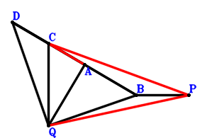
Answer：
\(\because \) C is the midpoint of DA \(\therefore \small\overrightarrow{BD}=- \small\overrightarrow{BA} + 2 \small\overrightarrow{BC}\).\(\because \) DQB is a triangle with DQ⊥QB and QA⊥DB where A lies on DB \(\therefore \small\overrightarrow{BA} \cdot \small\overrightarrow{BD} - \small\overrightarrow{BQ}^{2}=\small\overrightarrow{BA} \cdot \left(- \small\overrightarrow{BA} + 2 \small\overrightarrow{BC}\right) - \small\overrightarrow{BQ}^{2}=- \small\overrightarrow{BA}^{2} + 2 \small\overrightarrow{BA} \cdot \small\overrightarrow{BC} - \small\overrightarrow{BQ}^{2}=0\) . . . . . . \(①\)\(\because \) BP⊥CQ \(\therefore \small\overrightarrow{CQ} \cdot \small\overrightarrow{PB}=- \small\overrightarrow{BP} \cdot \left(- \small\overrightarrow{BC} + \small\overrightarrow{BQ}\right)=\small\overrightarrow{BC} \cdot \small\overrightarrow{BP} - \small\overrightarrow{BP} \cdot \small\overrightarrow{BQ}=0\) . . . . . . \(②\)In conclusion, \(\small\overrightarrow{AC}^{2} - \small\overrightarrow{PC}^{2} + \small\overrightarrow{QP}^{2}=\left(- \small\overrightarrow{BA} + \small\overrightarrow{BC}\right)^{2} - \left(\small\overrightarrow{BC} - \small\overrightarrow{BP}\right)^{2} + \left(\small\overrightarrow{BP} - \small\overrightarrow{BQ}\right)^{2}=\small\overrightarrow{BA}^{2} - 2 \small\overrightarrow{BA} \cdot \small\overrightarrow{BC} + 2 \small\overrightarrow{BC} \cdot \small\overrightarrow{BP} - 2 \small\overrightarrow{BP} \cdot \small\overrightarrow{BQ} + \small\overrightarrow{BQ}^{2}=-①+2\cdot②=0\), that is, \(CP^{2}=CA^{2} + QP^{2}\).
Exercise 644： Let ADCB be a parallelogram. DB⊥CA. PB//QC and \(QB^{2}=2 PB \cdot QC\). Prove that \(PC^{2}=AB^{2} + QP^{2}\).
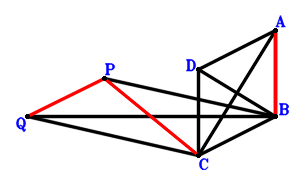
Answer：
\(\because \) ADCB is a parallelogram \(\therefore \small\overrightarrow{BD}=\small\overrightarrow{BA} + \small\overrightarrow{BC}\).\(\because \) DB⊥CA \(\therefore \small\overrightarrow{AC} \cdot \small\overrightarrow{BD}=\small\overrightarrow{BD} \cdot \left(- \small\overrightarrow{BA} + \small\overrightarrow{BC}\right)=\left(- \small\overrightarrow{BA} + \small\overrightarrow{BC}\right) \cdot \left(\small\overrightarrow{BA} + \small\overrightarrow{BC}\right)=- \small\overrightarrow{BA}^{2} + \small\overrightarrow{BC}^{2}=0\) . . . . . . \(①\)\(\because \) PB//QC and \(QB^{2}=2 PB \cdot QC\) \(\therefore - 2 \small\overrightarrow{CQ} \cdot \small\overrightarrow{PB} - \small\overrightarrow{QB}^{2}=2 \small\overrightarrow{BP} \cdot \left(- \small\overrightarrow{BC} + \small\overrightarrow{BQ}\right) - \small\overrightarrow{BQ}^{2}=- 2 \small\overrightarrow{BC} \cdot \small\overrightarrow{BP} + 2 \small\overrightarrow{BP} \cdot \small\overrightarrow{BQ} - \small\overrightarrow{BQ}^{2}=0\) . . . . . . \(②\)In conclusion, \(\small\overrightarrow{AB}^{2} - \small\overrightarrow{PC}^{2} + \small\overrightarrow{QP}^{2}=\small\overrightarrow{BA}^{2} - \left(\small\overrightarrow{BC} - \small\overrightarrow{BP}\right)^{2} + \left(\small\overrightarrow{BP} - \small\overrightarrow{BQ}\right)^{2}=\small\overrightarrow{BA}^{2} - \small\overrightarrow{BC}^{2} + 2 \small\overrightarrow{BC} \cdot \small\overrightarrow{BP} - 2 \small\overrightarrow{BP} \cdot \small\overrightarrow{BQ} + \small\overrightarrow{BQ}^{2}=-①-②=0\), that is, \(PC^{2}=AB^{2} + QP^{2}\).
Exercise 679： Let ABCD be a trapezoid with BC//AD and BC=2AD. D is the midpoint of AE. BE⊥AC. PB//QC and \(BQ^{2}=2 PB \cdot QC\). Prove that \(PC^{2}=BA^{2} + PQ^{2}\).
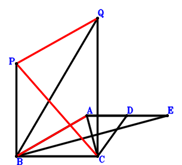
Answer：
\(\because \) BC//AD and BC=2AD \(\therefore \small\overrightarrow{BD}=\small\overrightarrow{BA} + \dfrac{\small\overrightarrow{BC}}{2}\).\(\because \) D is the midpoint of AE \(\therefore \small\overrightarrow{BE}=- \small\overrightarrow{BA} + 2 \small\overrightarrow{BD}=\small\overrightarrow{BA} + \small\overrightarrow{BC}\).\(\because \) BE⊥AC \(\therefore \small\overrightarrow{AC} \cdot \small\overrightarrow{BE}=\small\overrightarrow{BE} \cdot \left(- \small\overrightarrow{BA} + \small\overrightarrow{BC}\right)=\left(- \small\overrightarrow{BA} + \small\overrightarrow{BC}\right) \cdot \left(\small\overrightarrow{BA} + \small\overrightarrow{BC}\right)=- \small\overrightarrow{BA}^{2} + \small\overrightarrow{BC}^{2}=0\) . . . . . . \(①\)\(\because \) PB//QC and \(BQ^{2}=2 PB \cdot QC\) \(\therefore - 2 \small\overrightarrow{CQ} \cdot \small\overrightarrow{PB} - \small\overrightarrow{QB}^{2}=2 \small\overrightarrow{BP} \cdot \left(- \small\overrightarrow{BC} + \small\overrightarrow{BQ}\right) - \small\overrightarrow{BQ}^{2}=- 2 \small\overrightarrow{BC} \cdot \small\overrightarrow{BP} + 2 \small\overrightarrow{BP} \cdot \small\overrightarrow{BQ} - \small\overrightarrow{BQ}^{2}=0\) . . . . . . \(②\)In conclusion, \(\small\overrightarrow{AB}^{2} - \small\overrightarrow{PC}^{2} + \small\overrightarrow{QP}^{2}=\small\overrightarrow{BA}^{2} - \left(\small\overrightarrow{BC} - \small\overrightarrow{BP}\right)^{2} + \left(\small\overrightarrow{BP} - \small\overrightarrow{BQ}\right)^{2}=\small\overrightarrow{BA}^{2} - \small\overrightarrow{BC}^{2} + 2 \small\overrightarrow{BC} \cdot \small\overrightarrow{BP} - 2 \small\overrightarrow{BP} \cdot \small\overrightarrow{BQ} + \small\overrightarrow{BQ}^{2}=-①-②=0\), that is, \(PC^{2}=BA^{2} + PQ^{2}\).
Exercise 727： Let EBCD be a trapezoid with BC//ED and BC=2ED. D is the midpoint of BA. EA⊥AC. PB//QC and \(BQ^{2}=2 PB \cdot QC\). Prove that \(PC^{2}=BA^{2} + PQ^{2}\).
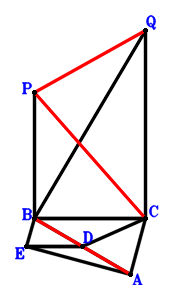
Answer：
\(\because \) D is the midpoint of BA \(\therefore \small\overrightarrow{BD}=\dfrac{\small\overrightarrow{BA}}{2}\).\(\because \) BC//ED and BC=2ED \(\therefore \small\overrightarrow{BE}=\dfrac{\small\overrightarrow{BA}}{2} - \dfrac{\small\overrightarrow{BC}}{2}\).\(\because \) EA⊥AC \(\therefore \small\overrightarrow{AC} \cdot \small\overrightarrow{EA}=\left(- \small\overrightarrow{BA} + \small\overrightarrow{BC}\right) \cdot \left(\small\overrightarrow{BA} - \small\overrightarrow{BE}\right)=\left(- \small\overrightarrow{BA} + \small\overrightarrow{BC}\right) \cdot \left(\dfrac{\small\overrightarrow{BA}}{2} + \dfrac{\small\overrightarrow{BC}}{2}\right)=- \dfrac{\small\overrightarrow{BA}^{2}}{2} + \dfrac{\small\overrightarrow{BC}^{2}}{2}=0\) . . . . . . \(①\)\(\because \) PB//QC and \(BQ^{2}=2 PB \cdot QC\) \(\therefore - 2 \small\overrightarrow{CQ} \cdot \small\overrightarrow{PB} - \small\overrightarrow{QB}^{2}=2 \small\overrightarrow{BP} \cdot \left(- \small\overrightarrow{BC} + \small\overrightarrow{BQ}\right) - \small\overrightarrow{BQ}^{2}=- 2 \small\overrightarrow{BC} \cdot \small\overrightarrow{BP} + 2 \small\overrightarrow{BP} \cdot \small\overrightarrow{BQ} - \small\overrightarrow{BQ}^{2}=0\) . . . . . . \(②\)In conclusion, \(\small\overrightarrow{AB}^{2} - \small\overrightarrow{PC}^{2} + \small\overrightarrow{QP}^{2}=\small\overrightarrow{BA}^{2} - \left(\small\overrightarrow{BC} - \small\overrightarrow{BP}\right)^{2} + \left(\small\overrightarrow{BP} - \small\overrightarrow{BQ}\right)^{2}=\small\overrightarrow{BA}^{2} - \small\overrightarrow{BC}^{2} + 2 \small\overrightarrow{BC} \cdot \small\overrightarrow{BP} - 2 \small\overrightarrow{BP} \cdot \small\overrightarrow{BQ} + \small\overrightarrow{BQ}^{2}=-2\cdot①-②=0\), that is, \(PC^{2}=BA^{2} + PQ^{2}\).
Exercise 752： Let C, E, A be collinear and CE=2EA. B, E, F are collinear and BF=3EF. D is the midpoint of BA. CA⊥DF. PB//QC and \(PC^{2}=2 PB \cdot QC\). Prove that \(QB^{2}=BA^{2} + QP^{2}\).
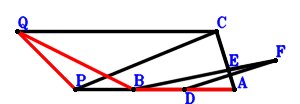
Answer：
\(\because \) D is the midpoint of BA \(\therefore \small\overrightarrow{BD}=\dfrac{\small\overrightarrow{BA}}{2}\).\(\because \) C, E, A are collinear and CE=2EA \(\therefore \small\overrightarrow{BE}=\dfrac{2 \small\overrightarrow{BA}}{3} + \dfrac{\small\overrightarrow{BC}}{3}\).\(\because \) B, E, F are collinear and BF=3EF \(\therefore \small\overrightarrow{BF}=\dfrac{3 \small\overrightarrow{BE}}{2}=\small\overrightarrow{BA} + \dfrac{\small\overrightarrow{BC}}{2}\).\(\because \) CA⊥DF \(\therefore \small\overrightarrow{AC} \cdot \small\overrightarrow{DF}=\left(- \small\overrightarrow{BA} + \small\overrightarrow{BC}\right) \cdot \left(- \small\overrightarrow{BD} + \small\overrightarrow{BF}\right)=\left(- \small\overrightarrow{BA} + \small\overrightarrow{BC}\right) \cdot \left(\dfrac{\small\overrightarrow{BA}}{2} + \dfrac{\small\overrightarrow{BC}}{2}\right)=- \dfrac{\small\overrightarrow{BA}^{2}}{2} + \dfrac{\small\overrightarrow{BC}^{2}}{2}=0\) . . . . . . \(①\)\(\because \) PB//QC and \(PC^{2}=2 PB \cdot QC\) \(\therefore - 2 \small\overrightarrow{CQ} \cdot \small\overrightarrow{PB} - \small\overrightarrow{PC}^{2}=2 \small\overrightarrow{BP} \cdot \left(- \small\overrightarrow{BC} + \small\overrightarrow{BQ}\right) - \left(\small\overrightarrow{BC} - \small\overrightarrow{BP}\right)^{2}=- \small\overrightarrow{BC}^{2} - \small\overrightarrow{BP}^{2} + 2 \small\overrightarrow{BP} \cdot \small\overrightarrow{BQ}=0\) . . . . . . \(②\)In conclusion, \(\small\overrightarrow{AB}^{2} - \small\overrightarrow{QB}^{2} + \small\overrightarrow{QP}^{2}=\small\overrightarrow{BA}^{2} - \small\overrightarrow{BQ}^{2} + \left(\small\overrightarrow{BP} - \small\overrightarrow{BQ}\right)^{2}=\small\overrightarrow{BA}^{2} + \small\overrightarrow{BP}^{2} - 2 \small\overrightarrow{BP} \cdot \small\overrightarrow{BQ}=-2\cdot①-②=0\), that is, \(QB^{2}=BA^{2} + QP^{2}\).
Exercise 855： Let CADB be a parallelogram. A is the midpoint of EB. ED⊥AC. PB//CQ and \(AB^{2}=2 CQ \cdot PB\). Prove that \(PQ^{2}=CP^{2} + QB^{2}\).
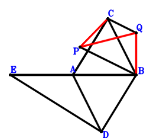
Answer：
\(\because \) CADB is a parallelogram \(\therefore \small\overrightarrow{BD}=\small\overrightarrow{BA} - \small\overrightarrow{BC}\).\(\because \) A is the midpoint of EB \(\therefore \small\overrightarrow{BE}=2 \small\overrightarrow{BA}\).\(\because \) ED⊥AC \(\therefore \small\overrightarrow{AC} \cdot \small\overrightarrow{DE}=\left(- \small\overrightarrow{BA} + \small\overrightarrow{BC}\right) \cdot \left(- \small\overrightarrow{BD} + \small\overrightarrow{BE}\right)=\left(- \small\overrightarrow{BA} + \small\overrightarrow{BC}\right) \cdot \left(\small\overrightarrow{BA} + \small\overrightarrow{BC}\right)=- \small\overrightarrow{BA}^{2} + \small\overrightarrow{BC}^{2}=0\) . . . . . . \(①\)\(\because \) PB//CQ and \(AB^{2}=2 CQ \cdot PB\) \(\therefore \small\overrightarrow{AB}^{2} - 2 \small\overrightarrow{CQ} \cdot \small\overrightarrow{PB}=\small\overrightarrow{BA}^{2} + 2 \small\overrightarrow{BP} \cdot \left(- \small\overrightarrow{BC} + \small\overrightarrow{BQ}\right)=\small\overrightarrow{BA}^{2} - 2 \small\overrightarrow{BC} \cdot \small\overrightarrow{BP} + 2 \small\overrightarrow{BP} \cdot \small\overrightarrow{BQ}=0\) . . . . . . \(②\)In conclusion, \(- \small\overrightarrow{PC}^{2} - \small\overrightarrow{QB}^{2} + \small\overrightarrow{QP}^{2}=- \small\overrightarrow{BQ}^{2} - \left(\small\overrightarrow{BC} - \small\overrightarrow{BP}\right)^{2} + \left(\small\overrightarrow{BP} - \small\overrightarrow{BQ}\right)^{2}=- \small\overrightarrow{BC}^{2} + 2 \small\overrightarrow{BC} \cdot \small\overrightarrow{BP} - 2 \small\overrightarrow{BP} \cdot \small\overrightarrow{BQ}=-①-②=0\), that is, \(PQ^{2}=CP^{2} + QB^{2}\).
Exercise 943： Let EABD be a trapezoid with AB//ED and AB=2ED. D, E are the midpoints of AC, FA, respectively. FB⊥AC. PB//CQ and \(QP^{2}=2 CQ \cdot PB\). Prove that \(AB^{2}=CP^{2} + QB^{2}\).
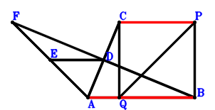
Answer：
\(\because \) D is the midpoint of AC \(\therefore \small\overrightarrow{BD}=\dfrac{\small\overrightarrow{BA}}{2} + \dfrac{\small\overrightarrow{BC}}{2}\).\(\because \) AB//ED and AB=2ED \(\therefore \small\overrightarrow{BE}=\small\overrightarrow{BA} + \dfrac{\small\overrightarrow{BC}}{2}\).\(\because \) E is the midpoint of FA \(\therefore \small\overrightarrow{BF}=- \small\overrightarrow{BA} + 2 \small\overrightarrow{BE}=\small\overrightarrow{BA} + \small\overrightarrow{BC}\).\(\because \) FB⊥AC \(\therefore \small\overrightarrow{AC} \cdot \small\overrightarrow{BF}=\small\overrightarrow{BF} \cdot \left(- \small\overrightarrow{BA} + \small\overrightarrow{BC}\right)=\left(- \small\overrightarrow{BA} + \small\overrightarrow{BC}\right) \cdot \left(\small\overrightarrow{BA} + \small\overrightarrow{BC}\right)=- \small\overrightarrow{BA}^{2} + \small\overrightarrow{BC}^{2}=0\) . . . . . . \(①\)\(\because \) PB//CQ and \(QP^{2}=2 CQ \cdot PB\) \(\therefore - 2 \small\overrightarrow{CQ} \cdot \small\overrightarrow{PB} + \small\overrightarrow{QP}^{2}=2 \small\overrightarrow{BP} \cdot \left(- \small\overrightarrow{BC} + \small\overrightarrow{BQ}\right) + \left(\small\overrightarrow{BP} - \small\overrightarrow{BQ}\right)^{2}=- 2 \small\overrightarrow{BC} \cdot \small\overrightarrow{BP} + \small\overrightarrow{BP}^{2} + \small\overrightarrow{BQ}^{2}=0\) . . . . . . \(②\)In conclusion, \(\small\overrightarrow{AB}^{2} - \small\overrightarrow{PC}^{2} - \small\overrightarrow{QB}^{2}=\small\overrightarrow{BA}^{2} - \small\overrightarrow{BQ}^{2} - \left(\small\overrightarrow{BC} - \small\overrightarrow{BP}\right)^{2}=\small\overrightarrow{BA}^{2} - \small\overrightarrow{BC}^{2} + 2 \small\overrightarrow{BC} \cdot \small\overrightarrow{BP} - \small\overrightarrow{BP}^{2} - \small\overrightarrow{BQ}^{2}=-①-②=0\), that is, \(AB^{2}=CP^{2} + QB^{2}\).
Exercise 1076： Let ABCD be a parallelogram. E is the midpoint of CD. BA⊥AE. PB//QC and \(QB^{2}=2 PB \cdot QC\). Prove that \(PC^{2}=AC^{2} + PQ^{2}\).
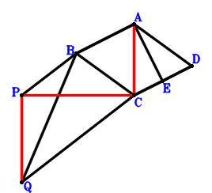
Answer：
\(\because \) ABCD is a parallelogram \(\therefore \small\overrightarrow{CD}=\small\overrightarrow{CA} - \small\overrightarrow{CB}\).\(\because \) E is the midpoint of CD \(\therefore \small\overrightarrow{CE}=\dfrac{\small\overrightarrow{CD}}{2}=\dfrac{\small\overrightarrow{CA}}{2} - \dfrac{\small\overrightarrow{CB}}{2}\).\(\because \) BA⊥AE \(\therefore \small\overrightarrow{AB} \cdot \small\overrightarrow{EA}=\left(- \small\overrightarrow{CA} + \small\overrightarrow{CB}\right) \cdot \left(\small\overrightarrow{CA} - \small\overrightarrow{CE}\right)=\left(- \small\overrightarrow{CA} + \small\overrightarrow{CB}\right) \cdot \left(\dfrac{\small\overrightarrow{CA}}{2} + \dfrac{\small\overrightarrow{CB}}{2}\right)=- \dfrac{\small\overrightarrow{CA}^{2}}{2} + \dfrac{\small\overrightarrow{CB}^{2}}{2}=0\) . . . . . . \(①\)\(\because \) PB//QC and \(QB^{2}=2 PB \cdot QC\) \(\therefore - 2 \small\overrightarrow{CQ} \cdot \small\overrightarrow{PB} - \small\overrightarrow{QB}^{2}=- 2 \small\overrightarrow{CQ} \cdot \left(\small\overrightarrow{CB} - \small\overrightarrow{CP}\right) - \left(\small\overrightarrow{CB} - \small\overrightarrow{CQ}\right)^{2}=- \small\overrightarrow{CB}^{2} + 2 \small\overrightarrow{CP} \cdot \small\overrightarrow{CQ} - \small\overrightarrow{CQ}^{2}=0\) . . . . . . \(②\)In conclusion, \(\small\overrightarrow{AC}^{2} - \small\overrightarrow{PC}^{2} + \small\overrightarrow{QP}^{2}=\small\overrightarrow{CA}^{2} - \small\overrightarrow{CP}^{2} + \left(\small\overrightarrow{CP} - \small\overrightarrow{CQ}\right)^{2}=\small\overrightarrow{CA}^{2} - 2 \small\overrightarrow{CP} \cdot \small\overrightarrow{CQ} + \small\overrightarrow{CQ}^{2}=-2\cdot①-②=0\), that is, \(PC^{2}=AC^{2} + PQ^{2}\).
Exercise 1125： Let AFED be a trapezoid with FA//ED and FA=2ED. D, E are the midpoints of AC, BA, respectively. FC⊥BA. PB//QC and \(PC^{2}=2 PB \cdot QC\). Prove that \(QB^{2}=AC^{2} + PQ^{2}\).
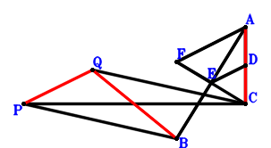
Answer：
\(\because \) D is the midpoint of AC \(\therefore \small\overrightarrow{CD}=\dfrac{\small\overrightarrow{CA}}{2}\).\(\because \) E is the midpoint of BA \(\therefore \small\overrightarrow{CE}=\dfrac{\small\overrightarrow{CA}}{2} + \dfrac{\small\overrightarrow{CB}}{2}\).\(\because \) FA//ED and FA=2ED \(\therefore \small\overrightarrow{CF}=2 \small\overrightarrow{CE}=\small\overrightarrow{CA} + \small\overrightarrow{CB}\).\(\because \) FC⊥BA \(\therefore \small\overrightarrow{AB} \cdot \small\overrightarrow{CF}=\small\overrightarrow{CF} \cdot \left(- \small\overrightarrow{CA} + \small\overrightarrow{CB}\right)=\left(- \small\overrightarrow{CA} + \small\overrightarrow{CB}\right) \cdot \left(\small\overrightarrow{CA} + \small\overrightarrow{CB}\right)=- \small\overrightarrow{CA}^{2} + \small\overrightarrow{CB}^{2}=0\) . . . . . . \(①\)\(\because \) PB//QC and \(PC^{2}=2 PB \cdot QC\) \(\therefore - 2 \small\overrightarrow{CQ} \cdot \small\overrightarrow{PB} - \small\overrightarrow{PC}^{2}=- \small\overrightarrow{CP}^{2} - 2 \small\overrightarrow{CQ} \cdot \left(\small\overrightarrow{CB} - \small\overrightarrow{CP}\right)=- 2 \small\overrightarrow{CB} \cdot \small\overrightarrow{CQ} - \small\overrightarrow{CP}^{2} + 2 \small\overrightarrow{CP} \cdot \small\overrightarrow{CQ}=0\) . . . . . . \(②\)In conclusion, \(\small\overrightarrow{AC}^{2} - \small\overrightarrow{QB}^{2} + \small\overrightarrow{QP}^{2}=\small\overrightarrow{CA}^{2} - \left(\small\overrightarrow{CB} - \small\overrightarrow{CQ}\right)^{2} + \left(\small\overrightarrow{CP} - \small\overrightarrow{CQ}\right)^{2}=\small\overrightarrow{CA}^{2} - \small\overrightarrow{CB}^{2} + 2 \small\overrightarrow{CB} \cdot \small\overrightarrow{CQ} + \small\overrightarrow{CP}^{2} - 2 \small\overrightarrow{CP} \cdot \small\overrightarrow{CQ}=-①-②=0\), that is, \(QB^{2}=AC^{2} + PQ^{2}\).
Exercise 1131： Let C be the midpoint of BD. BA⊥AD. PB//QC and \(PC^{2}=2 PB \cdot QC\). Prove that \(QB^{2}=CA^{2} + PQ^{2}\).
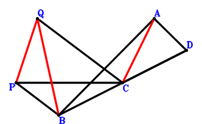
Answer：
\(\because \) C is the midpoint of BD \(\therefore \small\overrightarrow{CD}=- \small\overrightarrow{CB}\).\(\because \) BA⊥AD \(\therefore \small\overrightarrow{AB} \cdot \small\overrightarrow{DA}=\left(- \small\overrightarrow{CA} + \small\overrightarrow{CB}\right) \cdot \left(\small\overrightarrow{CA} - \small\overrightarrow{CD}\right)=\left(- \small\overrightarrow{CA} + \small\overrightarrow{CB}\right) \cdot \left(\small\overrightarrow{CA} + \small\overrightarrow{CB}\right)=- \small\overrightarrow{CA}^{2} + \small\overrightarrow{CB}^{2}=0\) . . . . . . \(①\)\(\because \) PB//QC and \(PC^{2}=2 PB \cdot QC\) \(\therefore - 2 \small\overrightarrow{CQ} \cdot \small\overrightarrow{PB} - \small\overrightarrow{PC}^{2}=- \small\overrightarrow{CP}^{2} - 2 \small\overrightarrow{CQ} \cdot \left(\small\overrightarrow{CB} - \small\overrightarrow{CP}\right)=- 2 \small\overrightarrow{CB} \cdot \small\overrightarrow{CQ} - \small\overrightarrow{CP}^{2} + 2 \small\overrightarrow{CP} \cdot \small\overrightarrow{CQ}=0\) . . . . . . \(②\)In conclusion, \(\small\overrightarrow{AC}^{2} - \small\overrightarrow{QB}^{2} + \small\overrightarrow{QP}^{2}=\small\overrightarrow{CA}^{2} - \left(\small\overrightarrow{CB} - \small\overrightarrow{CQ}\right)^{2} + \left(\small\overrightarrow{CP} - \small\overrightarrow{CQ}\right)^{2}=\small\overrightarrow{CA}^{2} - \small\overrightarrow{CB}^{2} + 2 \small\overrightarrow{CB} \cdot \small\overrightarrow{CQ} + \small\overrightarrow{CP}^{2} - 2 \small\overrightarrow{CP} \cdot \small\overrightarrow{CQ}=-①-②=0\), that is, \(QB^{2}=CA^{2} + PQ^{2}\).
Exercise 1134： Let ACBD be a trapezoid with CB//AD and CB=2AD. D is the midpoint of CE. BA⊥AE. PB//QC and \(CP^{2}=2 PB \cdot QC\). Prove that \(QB^{2}=CA^{2} + QP^{2}\).
Answer：
\(\because \) CB//AD and CB=2AD \(\therefore \small\overrightarrow{CD}=\small\overrightarrow{CA} + \dfrac{\small\overrightarrow{CB}}{2}\).\(\because \) D is the midpoint of CE \(\therefore \small\overrightarrow{CE}=2 \small\overrightarrow{CD}=2 \small\overrightarrow{CA} + \small\overrightarrow{CB}\).\(\because \) BA⊥AE \(\therefore \small\overrightarrow{AB} \cdot \small\overrightarrow{AE}=\left(- \small\overrightarrow{CA} + \small\overrightarrow{CB}\right) \cdot \left(- \small\overrightarrow{CA} + \small\overrightarrow{CE}\right)=\left(- \small\overrightarrow{CA} + \small\overrightarrow{CB}\right) \cdot \left(\small\overrightarrow{CA} + \small\overrightarrow{CB}\right)=- \small\overrightarrow{CA}^{2} + \small\overrightarrow{CB}^{2}=0\) . . . . . . \(①\)\(\because \) PB//QC and \(CP^{2}=2 PB \cdot QC\) \(\therefore - 2 \small\overrightarrow{CQ} \cdot \small\overrightarrow{PB} - \small\overrightarrow{PC}^{2}=- \small\overrightarrow{CP}^{2} - 2 \small\overrightarrow{CQ} \cdot \left(\small\overrightarrow{CB} - \small\overrightarrow{CP}\right)=- 2 \small\overrightarrow{CB} \cdot \small\overrightarrow{CQ} - \small\overrightarrow{CP}^{2} + 2 \small\overrightarrow{CP} \cdot \small\overrightarrow{CQ}=0\) . . . . . . \(②\)In conclusion, \(\small\overrightarrow{AC}^{2} - \small\overrightarrow{QB}^{2} + \small\overrightarrow{QP}^{2}=\small\overrightarrow{CA}^{2} - \left(\small\overrightarrow{CB} - \small\overrightarrow{CQ}\right)^{2} + \left(\small\overrightarrow{CP} - \small\overrightarrow{CQ}\right)^{2}=\small\overrightarrow{CA}^{2} - \small\overrightarrow{CB}^{2} + 2 \small\overrightarrow{CB} \cdot \small\overrightarrow{CQ} + \small\overrightarrow{CP}^{2} - 2 \small\overrightarrow{CP} \cdot \small\overrightarrow{CQ}=-①-②=0\), that is, \(QB^{2}=CA^{2} + QP^{2}\).
Exercise 1150： Let F be the midpoint of CE. D is the midpoint of BE and AC. BA⊥AF. PB//QC and \(PC^{2}=2 PB \cdot QC\). Prove that \(QB^{2}=AC^{2} + PQ^{2}\).
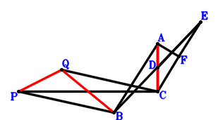
Answer：
\(\because \) D is the midpoint of AC \(\therefore \small\overrightarrow{CD}=\dfrac{\small\overrightarrow{CA}}{2}\).\(\because \) D is the midpoint of BE \(\therefore \small\overrightarrow{CE}=- \small\overrightarrow{CB} + 2 \small\overrightarrow{CD}=\small\overrightarrow{CA} - \small\overrightarrow{CB}\).\(\because \) F is the midpoint of CE \(\therefore \small\overrightarrow{CF}=\dfrac{\small\overrightarrow{CE}}{2}=\dfrac{\small\overrightarrow{CA}}{2} - \dfrac{\small\overrightarrow{CB}}{2}\).\(\because \) BA⊥AF \(\therefore \small\overrightarrow{AB} \cdot \small\overrightarrow{FA}=\left(- \small\overrightarrow{CA} + \small\overrightarrow{CB}\right) \cdot \left(\small\overrightarrow{CA} - \small\overrightarrow{CF}\right)=\left(- \small\overrightarrow{CA} + \small\overrightarrow{CB}\right) \cdot \left(\dfrac{\small\overrightarrow{CA}}{2} + \dfrac{\small\overrightarrow{CB}}{2}\right)=- \dfrac{\small\overrightarrow{CA}^{2}}{2} + \dfrac{\small\overrightarrow{CB}^{2}}{2}=0\) . . . . . . \(①\)\(\because \) PB//QC and \(PC^{2}=2 PB \cdot QC\) \(\therefore - 2 \small\overrightarrow{CQ} \cdot \small\overrightarrow{PB} - \small\overrightarrow{PC}^{2}=- \small\overrightarrow{CP}^{2} - 2 \small\overrightarrow{CQ} \cdot \left(\small\overrightarrow{CB} - \small\overrightarrow{CP}\right)=- 2 \small\overrightarrow{CB} \cdot \small\overrightarrow{CQ} - \small\overrightarrow{CP}^{2} + 2 \small\overrightarrow{CP} \cdot \small\overrightarrow{CQ}=0\) . . . . . . \(②\)In conclusion, \(\small\overrightarrow{AC}^{2} - \small\overrightarrow{QB}^{2} + \small\overrightarrow{QP}^{2}=\small\overrightarrow{CA}^{2} - \left(\small\overrightarrow{CB} - \small\overrightarrow{CQ}\right)^{2} + \left(\small\overrightarrow{CP} - \small\overrightarrow{CQ}\right)^{2}=\small\overrightarrow{CA}^{2} - \small\overrightarrow{CB}^{2} + 2 \small\overrightarrow{CB} \cdot \small\overrightarrow{CQ} + \small\overrightarrow{CP}^{2} - 2 \small\overrightarrow{CP} \cdot \small\overrightarrow{CQ}=-2\cdot①-②=0\), that is, \(QB^{2}=AC^{2} + PQ^{2}\).
Exercise 1194： Let D be the midpoint of AB. AB⊥CD. PB//CQ and \(AC^{2}=2 CQ \cdot PB\). Prove that \(PQ^{2}=CP^{2} + QB^{2}\).
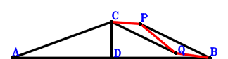
Answer：
\(\because \) D is the midpoint of AB \(\therefore \small\overrightarrow{BD}=\dfrac{\small\overrightarrow{BA}}{2}\).\(\because \) AB⊥CD \(\therefore \small\overrightarrow{AB} \cdot \small\overrightarrow{CD}=- \small\overrightarrow{BA} \cdot \left(- \small\overrightarrow{BC} + \small\overrightarrow{BD}\right)=- \small\overrightarrow{BA} \cdot \left(\dfrac{\small\overrightarrow{BA}}{2} - \small\overrightarrow{BC}\right)=- \dfrac{\small\overrightarrow{BA}^{2}}{2} + \small\overrightarrow{BA} \cdot \small\overrightarrow{BC}=0\) . . . . . . \(①\)\(\because \) PB//CQ and \(AC^{2}=2 CQ \cdot PB\) \(\therefore \small\overrightarrow{AC}^{2} - 2 \small\overrightarrow{CQ} \cdot \small\overrightarrow{PB}=2 \small\overrightarrow{BP} \cdot \left(- \small\overrightarrow{BC} + \small\overrightarrow{BQ}\right) + \left(- \small\overrightarrow{BA} + \small\overrightarrow{BC}\right)^{2}=\small\overrightarrow{BA}^{2} - 2 \small\overrightarrow{BA} \cdot \small\overrightarrow{BC} + \small\overrightarrow{BC}^{2} - 2 \small\overrightarrow{BC} \cdot \small\overrightarrow{BP} + 2 \small\overrightarrow{BP} \cdot \small\overrightarrow{BQ}=0\) . . . . . . \(②\)In conclusion, \(- \small\overrightarrow{PC}^{2} - \small\overrightarrow{QB}^{2} + \small\overrightarrow{QP}^{2}=- \small\overrightarrow{BQ}^{2} - \left(\small\overrightarrow{BC} - \small\overrightarrow{BP}\right)^{2} + \left(\small\overrightarrow{BP} - \small\overrightarrow{BQ}\right)^{2}=- \small\overrightarrow{BC}^{2} + 2 \small\overrightarrow{BC} \cdot \small\overrightarrow{BP} - 2 \small\overrightarrow{BP} \cdot \small\overrightarrow{BQ}=-2\cdot①-②=0\), that is, \(PQ^{2}=CP^{2} + QB^{2}\).
Exercise 1216： Let EBCA be a trapezoid with BC//EA and BC=2EA. D is the midpoint of AC. BA⊥ED. BP//QC and \(AC^{2}=2 BP \cdot QC\). Prove that \(QP^{2}=BQ^{2} + PC^{2}\).
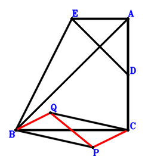
Answer：
\(\because \) D is the midpoint of AC \(\therefore \small\overrightarrow{CD}=\dfrac{\small\overrightarrow{CA}}{2}\).\(\because \) BC//EA and BC=2EA \(\therefore \small\overrightarrow{CE}=\small\overrightarrow{CA} + \dfrac{\small\overrightarrow{CB}}{2}\).\(\because \) BA⊥ED \(\therefore \small\overrightarrow{AB} \cdot \small\overrightarrow{DE}=\left(- \small\overrightarrow{CA} + \small\overrightarrow{CB}\right) \cdot \left(- \small\overrightarrow{CD} + \small\overrightarrow{CE}\right)=\left(- \small\overrightarrow{CA} + \small\overrightarrow{CB}\right) \cdot \left(\dfrac{\small\overrightarrow{CA}}{2} + \dfrac{\small\overrightarrow{CB}}{2}\right)=- \dfrac{\small\overrightarrow{CA}^{2}}{2} + \dfrac{\small\overrightarrow{CB}^{2}}{2}=0\) . . . . . . \(①\)\(\because \) BP//QC and \(AC^{2}=2 BP \cdot QC\) \(\therefore \small\overrightarrow{AC}^{2} - 2 \small\overrightarrow{CQ} \cdot \small\overrightarrow{PB}=\small\overrightarrow{CA}^{2} - 2 \small\overrightarrow{CQ} \cdot \left(\small\overrightarrow{CB} - \small\overrightarrow{CP}\right)=\small\overrightarrow{CA}^{2} - 2 \small\overrightarrow{CB} \cdot \small\overrightarrow{CQ} + 2 \small\overrightarrow{CP} \cdot \small\overrightarrow{CQ}=0\) . . . . . . \(②\)In conclusion, \(- \small\overrightarrow{PC}^{2} - \small\overrightarrow{QB}^{2} + \small\overrightarrow{QP}^{2}=- \small\overrightarrow{CP}^{2} - \left(\small\overrightarrow{CB} - \small\overrightarrow{CQ}\right)^{2} + \left(\small\overrightarrow{CP} - \small\overrightarrow{CQ}\right)^{2}=- \small\overrightarrow{CB}^{2} + 2 \small\overrightarrow{CB} \cdot \small\overrightarrow{CQ} - 2 \small\overrightarrow{CP} \cdot \small\overrightarrow{CQ}=-2\cdot①-②=0\), that is, \(QP^{2}=BQ^{2} + PC^{2}\).
Exercise 1305： Let EDAB be a parallelogram. A is the midpoint of DC. EC⊥AB. BP//QC and \(QP^{2}=2 BP \cdot QC\). Prove that \(AC^{2}=BQ^{2} + PC^{2}\).
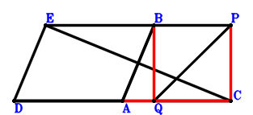
Answer：
\(\because \) A is the midpoint of DC \(\therefore \small\overrightarrow{CD}=2 \small\overrightarrow{CA}\).\(\because \) EDAB is a parallelogram \(\therefore \small\overrightarrow{CE}=\small\overrightarrow{CA} + \small\overrightarrow{CB}\).\(\because \) EC⊥AB \(\therefore \small\overrightarrow{AB} \cdot \small\overrightarrow{CE}=\small\overrightarrow{CE} \cdot \left(- \small\overrightarrow{CA} + \small\overrightarrow{CB}\right)=\left(- \small\overrightarrow{CA} + \small\overrightarrow{CB}\right) \cdot \left(\small\overrightarrow{CA} + \small\overrightarrow{CB}\right)=- \small\overrightarrow{CA}^{2} + \small\overrightarrow{CB}^{2}=0\) . . . . . . \(①\)\(\because \) BP//QC and \(QP^{2}=2 BP \cdot QC\) \(\therefore - 2 \small\overrightarrow{CQ} \cdot \small\overrightarrow{PB} + \small\overrightarrow{QP}^{2}=- 2 \small\overrightarrow{CQ} \cdot \left(\small\overrightarrow{CB} - \small\overrightarrow{CP}\right) + \left(\small\overrightarrow{CP} - \small\overrightarrow{CQ}\right)^{2}=- 2 \small\overrightarrow{CB} \cdot \small\overrightarrow{CQ} + \small\overrightarrow{CP}^{2} + \small\overrightarrow{CQ}^{2}=0\) . . . . . . \(②\)In conclusion, \(\small\overrightarrow{AC}^{2} - \small\overrightarrow{PC}^{2} - \small\overrightarrow{QB}^{2}=\small\overrightarrow{CA}^{2} - \small\overrightarrow{CP}^{2} - \left(\small\overrightarrow{CB} - \small\overrightarrow{CQ}\right)^{2}=\small\overrightarrow{CA}^{2} - \small\overrightarrow{CB}^{2} + 2 \small\overrightarrow{CB} \cdot \small\overrightarrow{CQ} - \small\overrightarrow{CP}^{2} - \small\overrightarrow{CQ}^{2}=-①-②=0\), that is, \(AC^{2}=BQ^{2} + PC^{2}\).
Exercise 1349： Let EDCB be a parallelogram. A is the midpoint of DC. EA⊥AB. BP//QC and \(QP^{2}=2 BP \cdot QC\). Prove that \(AC^{2}=BQ^{2} + PC^{2}\).
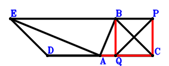
Answer：
\(\because \) A is the midpoint of DC \(\therefore \small\overrightarrow{CD}=2 \small\overrightarrow{CA}\).\(\because \) EDCB is a parallelogram \(\therefore \small\overrightarrow{CE}=2 \small\overrightarrow{CA} + \small\overrightarrow{CB}\).\(\because \) EA⊥AB \(\therefore \small\overrightarrow{AB} \cdot \small\overrightarrow{AE}=\left(- \small\overrightarrow{CA} + \small\overrightarrow{CB}\right) \cdot \left(- \small\overrightarrow{CA} + \small\overrightarrow{CE}\right)=\left(- \small\overrightarrow{CA} + \small\overrightarrow{CB}\right) \cdot \left(\small\overrightarrow{CA} + \small\overrightarrow{CB}\right)=- \small\overrightarrow{CA}^{2} + \small\overrightarrow{CB}^{2}=0\) . . . . . . \(①\)\(\because \) BP//QC and \(QP^{2}=2 BP \cdot QC\) \(\therefore - 2 \small\overrightarrow{CQ} \cdot \small\overrightarrow{PB} + \small\overrightarrow{QP}^{2}=- 2 \small\overrightarrow{CQ} \cdot \left(\small\overrightarrow{CB} - \small\overrightarrow{CP}\right) + \left(\small\overrightarrow{CP} - \small\overrightarrow{CQ}\right)^{2}=- 2 \small\overrightarrow{CB} \cdot \small\overrightarrow{CQ} + \small\overrightarrow{CP}^{2} + \small\overrightarrow{CQ}^{2}=0\) . . . . . . \(②\)In conclusion, \(\small\overrightarrow{AC}^{2} - \small\overrightarrow{PC}^{2} - \small\overrightarrow{QB}^{2}=\small\overrightarrow{CA}^{2} - \small\overrightarrow{CP}^{2} - \left(\small\overrightarrow{CB} - \small\overrightarrow{CQ}\right)^{2}=\small\overrightarrow{CA}^{2} - \small\overrightarrow{CB}^{2} + 2 \small\overrightarrow{CB} \cdot \small\overrightarrow{CQ} - \small\overrightarrow{CP}^{2} - \small\overrightarrow{CQ}^{2}=-①-②=0\), that is, \(AC^{2}=BQ^{2} + PC^{2}\).
Exercise 3013： Let PB⊥QC and BA⊥AC. BA=BQ. Prove that \(PC^{2}=CA^{2} + PQ^{2}\).
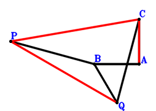
Answer：
\(\because \) BA=BQ \(\therefore \small\overrightarrow{AB}^{2} - \small\overrightarrow{QB}^{2}=\small\overrightarrow{AB}^{2} - \left(\small\overrightarrow{AB} - \small\overrightarrow{AQ}\right)^{2}=2 \small\overrightarrow{AB} \cdot \small\overrightarrow{AQ} - \small\overrightarrow{AQ}^{2}=0\) . . . . . . \(①\)\(\because \) BA⊥AC \(\therefore \small\overrightarrow{AB} \cdot \small\overrightarrow{AC}=0\) . . . . . . \(②\)\(\because \) PB⊥QC \(\therefore \small\overrightarrow{CQ} \cdot \small\overrightarrow{PB}=\left(\small\overrightarrow{AB} - \small\overrightarrow{AP}\right) \cdot \left(- \small\overrightarrow{AC} + \small\overrightarrow{AQ}\right)=- \small\overrightarrow{AB} \cdot \small\overrightarrow{AC} + \small\overrightarrow{AB} \cdot \small\overrightarrow{AQ} + \small\overrightarrow{AC} \cdot \small\overrightarrow{AP} - \small\overrightarrow{AP} \cdot \small\overrightarrow{AQ}=0\) . . . . . . \(③\)In conclusion, \(\small\overrightarrow{AC}^{2} - \small\overrightarrow{PC}^{2} + \small\overrightarrow{QP}^{2}=\small\overrightarrow{AC}^{2} - \left(\small\overrightarrow{AC} - \small\overrightarrow{AP}\right)^{2} + \left(\small\overrightarrow{AP} - \small\overrightarrow{AQ}\right)^{2}=2 \small\overrightarrow{AC} \cdot \small\overrightarrow{AP} - 2 \small\overrightarrow{AP} \cdot \small\overrightarrow{AQ} + \small\overrightarrow{AQ}^{2}=-①+2\cdot②+2\cdot③=0\), that is, \(PC^{2}=CA^{2} + PQ^{2}\).
Exercise 3029： Let D, G be the midpoints of BA, AF, respectively. E is the midpoint of AC and BF. AC⊥DG. QP=PC and BA=QB. Prove that BP⊥QC.
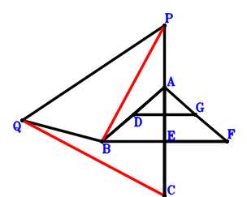
Answer：
\(\because \) D is the midpoint of BA \(\therefore \small\overrightarrow{AD}=\dfrac{\small\overrightarrow{AB}}{2}\).\(\because \) E is the midpoint of AC \(\therefore \small\overrightarrow{AE}=\dfrac{\small\overrightarrow{AC}}{2}\).\(\because \) E is the midpoint of BF \(\therefore \small\overrightarrow{AF}=- \small\overrightarrow{AB} + 2 \small\overrightarrow{AE}=- \small\overrightarrow{AB} + \small\overrightarrow{AC}\).\(\because \) G is the midpoint of AF \(\therefore \small\overrightarrow{AG}=\dfrac{\small\overrightarrow{AF}}{2}=- \dfrac{\small\overrightarrow{AB}}{2} + \dfrac{\small\overrightarrow{AC}}{2}\).\(\because \) QP=PC \(\therefore - \small\overrightarrow{PC}^{2} + \small\overrightarrow{QP}^{2}=- \left(\small\overrightarrow{AC} - \small\overrightarrow{AP}\right)^{2} + \left(\small\overrightarrow{AP} - \small\overrightarrow{AQ}\right)^{2}=- \small\overrightarrow{AC}^{2} + 2 \small\overrightarrow{AC} \cdot \small\overrightarrow{AP} - 2 \small\overrightarrow{AP} \cdot \small\overrightarrow{AQ} + \small\overrightarrow{AQ}^{2}=0\) . . . . . . \(①\)\(\because \) BA=QB \(\therefore \small\overrightarrow{AB}^{2} - \small\overrightarrow{QB}^{2}=\small\overrightarrow{AB}^{2} - \left(\small\overrightarrow{AB} - \small\overrightarrow{AQ}\right)^{2}=2 \small\overrightarrow{AB} \cdot \small\overrightarrow{AQ} - \small\overrightarrow{AQ}^{2}=0\) . . . . . . \(②\)\(\because \) AC⊥DG \(\therefore \small\overrightarrow{AC} \cdot \small\overrightarrow{DG}=\small\overrightarrow{AC} \cdot \left(- \small\overrightarrow{AD} + \small\overrightarrow{AG}\right)=\small\overrightarrow{AC} \cdot \left(- \small\overrightarrow{AB} + \dfrac{\small\overrightarrow{AC}}{2}\right)=- \small\overrightarrow{AB} \cdot \small\overrightarrow{AC} + \dfrac{\small\overrightarrow{AC}^{2}}{2}=0\) . . . . . . \(③\)In conclusion, \(\small\overrightarrow{CQ} \cdot \small\overrightarrow{PB}=\left(\small\overrightarrow{AB} - \small\overrightarrow{AP}\right) \cdot \left(- \small\overrightarrow{AC} + \small\overrightarrow{AQ}\right)=- \small\overrightarrow{AB} \cdot \small\overrightarrow{AC} + \small\overrightarrow{AB} \cdot \small\overrightarrow{AQ} + \small\overrightarrow{AC} \cdot \small\overrightarrow{AP} - \small\overrightarrow{AP} \cdot \small\overrightarrow{AQ}=1/2\cdot①+1/2\cdot②+③=0\), that is, BP⊥QC.
Exercise 3032： Let D be the midpoint of AC. AC⊥BD. AB=BQ and QP=PC. Prove that BP⊥QC.
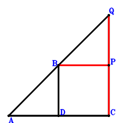
Answer：
\(\because \) D is the midpoint of AC \(\therefore \small\overrightarrow{CD}=\dfrac{\small\overrightarrow{CA}}{2}\).\(\because \) QP=PC \(\therefore - \small\overrightarrow{PC}^{2} + \small\overrightarrow{QP}^{2}=- \small\overrightarrow{CP}^{2} + \left(\small\overrightarrow{CP} - \small\overrightarrow{CQ}\right)^{2}=- 2 \small\overrightarrow{CP} \cdot \small\overrightarrow{CQ} + \small\overrightarrow{CQ}^{2}=0\) . . . . . . \(①\)\(\because \) AB=BQ \(\therefore \small\overrightarrow{AB}^{2} - \small\overrightarrow{QB}^{2}=\left(- \small\overrightarrow{CA} + \small\overrightarrow{CB}\right)^{2} - \left(\small\overrightarrow{CB} - \small\overrightarrow{CQ}\right)^{2}=\small\overrightarrow{CA}^{2} - 2 \small\overrightarrow{CA} \cdot \small\overrightarrow{CB} + 2 \small\overrightarrow{CB} \cdot \small\overrightarrow{CQ} - \small\overrightarrow{CQ}^{2}=0\) . . . . . . \(②\)\(\because \) AC⊥BD \(\therefore \small\overrightarrow{AC} \cdot \small\overrightarrow{BD}=- \small\overrightarrow{CA} \cdot \left(- \small\overrightarrow{CB} + \small\overrightarrow{CD}\right)=- \small\overrightarrow{CA} \cdot \left(\dfrac{\small\overrightarrow{CA}}{2} - \small\overrightarrow{CB}\right)=- \dfrac{\small\overrightarrow{CA}^{2}}{2} + \small\overrightarrow{CA} \cdot \small\overrightarrow{CB}=0\) . . . . . . \(③\)In conclusion, \(\small\overrightarrow{CQ} \cdot \small\overrightarrow{PB}=\small\overrightarrow{CQ} \cdot \left(\small\overrightarrow{CB} - \small\overrightarrow{CP}\right)=\small\overrightarrow{CB} \cdot \small\overrightarrow{CQ} - \small\overrightarrow{CP} \cdot \small\overrightarrow{CQ}=1/2\cdot①+1/2\cdot②+③=0\), that is, BP⊥QC.
Exercise 3052： Let ABEF be a trapezoid with BA//EF and BA=2EF. D, E are the midpoints of BA, AC, respectively. AC⊥DF. QP=PC and BA=QB. Prove that BP⊥QC.
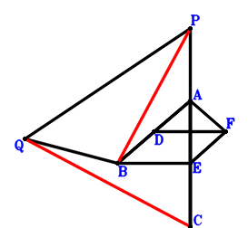
Answer：
\(\because \) D is the midpoint of BA \(\therefore \small\overrightarrow{AD}=\dfrac{\small\overrightarrow{AB}}{2}\).\(\because \) E is the midpoint of AC \(\therefore \small\overrightarrow{AE}=\dfrac{\small\overrightarrow{AC}}{2}\).\(\because \) BA//EF and BA=2EF \(\therefore \small\overrightarrow{AF}=- \dfrac{\small\overrightarrow{AB}}{2} + \dfrac{\small\overrightarrow{AC}}{2}\).\(\because \) QP=PC \(\therefore - \small\overrightarrow{PC}^{2} + \small\overrightarrow{QP}^{2}=- \left(\small\overrightarrow{AC} - \small\overrightarrow{AP}\right)^{2} + \left(\small\overrightarrow{AP} - \small\overrightarrow{AQ}\right)^{2}=- \small\overrightarrow{AC}^{2} + 2 \small\overrightarrow{AC} \cdot \small\overrightarrow{AP} - 2 \small\overrightarrow{AP} \cdot \small\overrightarrow{AQ} + \small\overrightarrow{AQ}^{2}=0\) . . . . . . \(①\)\(\because \) BA=QB \(\therefore \small\overrightarrow{AB}^{2} - \small\overrightarrow{QB}^{2}=\small\overrightarrow{AB}^{2} - \left(\small\overrightarrow{AB} - \small\overrightarrow{AQ}\right)^{2}=2 \small\overrightarrow{AB} \cdot \small\overrightarrow{AQ} - \small\overrightarrow{AQ}^{2}=0\) . . . . . . \(②\)\(\because \) AC⊥DF \(\therefore \small\overrightarrow{AC} \cdot \small\overrightarrow{DF}=\small\overrightarrow{AC} \cdot \left(- \small\overrightarrow{AD} + \small\overrightarrow{AF}\right)=\small\overrightarrow{AC} \cdot \left(- \small\overrightarrow{AB} + \dfrac{\small\overrightarrow{AC}}{2}\right)=- \small\overrightarrow{AB} \cdot \small\overrightarrow{AC} + \dfrac{\small\overrightarrow{AC}^{2}}{2}=0\) . . . . . . \(③\)In conclusion, \(\small\overrightarrow{CQ} \cdot \small\overrightarrow{PB}=\left(\small\overrightarrow{AB} - \small\overrightarrow{AP}\right) \cdot \left(- \small\overrightarrow{AC} + \small\overrightarrow{AQ}\right)=- \small\overrightarrow{AB} \cdot \small\overrightarrow{AC} + \small\overrightarrow{AB} \cdot \small\overrightarrow{AQ} + \small\overrightarrow{AC} \cdot \small\overrightarrow{AP} - \small\overrightarrow{AP} \cdot \small\overrightarrow{AQ}=1/2\cdot①+1/2\cdot②+③=0\), that is, BP⊥QC.
Exercise 3056： Let ABCE be a parallelogram. D, F are the midpoints of BA, AE, respectively. AC⊥DF. QP=PC and BA=QB. Prove that BP⊥QC.
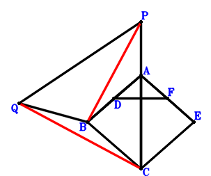
Answer：
\(\because \) D is the midpoint of BA \(\therefore \small\overrightarrow{AD}=\dfrac{\small\overrightarrow{AB}}{2}\).\(\because \) ABCE is a parallelogram \(\therefore \small\overrightarrow{AE}=- \small\overrightarrow{AB} + \small\overrightarrow{AC}\).\(\because \) F is the midpoint of AE \(\therefore \small\overrightarrow{AF}=\dfrac{\small\overrightarrow{AE}}{2}=- \dfrac{\small\overrightarrow{AB}}{2} + \dfrac{\small\overrightarrow{AC}}{2}\).\(\because \) QP=PC \(\therefore - \small\overrightarrow{PC}^{2} + \small\overrightarrow{QP}^{2}=- \left(\small\overrightarrow{AC} - \small\overrightarrow{AP}\right)^{2} + \left(\small\overrightarrow{AP} - \small\overrightarrow{AQ}\right)^{2}=- \small\overrightarrow{AC}^{2} + 2 \small\overrightarrow{AC} \cdot \small\overrightarrow{AP} - 2 \small\overrightarrow{AP} \cdot \small\overrightarrow{AQ} + \small\overrightarrow{AQ}^{2}=0\) . . . . . . \(①\)\(\because \) BA=QB \(\therefore \small\overrightarrow{AB}^{2} - \small\overrightarrow{QB}^{2}=\small\overrightarrow{AB}^{2} - \left(\small\overrightarrow{AB} - \small\overrightarrow{AQ}\right)^{2}=2 \small\overrightarrow{AB} \cdot \small\overrightarrow{AQ} - \small\overrightarrow{AQ}^{2}=0\) . . . . . . \(②\)\(\because \) AC⊥DF \(\therefore \small\overrightarrow{AC} \cdot \small\overrightarrow{DF}=\small\overrightarrow{AC} \cdot \left(- \small\overrightarrow{AD} + \small\overrightarrow{AF}\right)=\small\overrightarrow{AC} \cdot \left(- \small\overrightarrow{AB} + \dfrac{\small\overrightarrow{AC}}{2}\right)=- \small\overrightarrow{AB} \cdot \small\overrightarrow{AC} + \dfrac{\small\overrightarrow{AC}^{2}}{2}=0\) . . . . . . \(③\)In conclusion, \(\small\overrightarrow{CQ} \cdot \small\overrightarrow{PB}=\left(\small\overrightarrow{AB} - \small\overrightarrow{AP}\right) \cdot \left(- \small\overrightarrow{AC} + \small\overrightarrow{AQ}\right)=- \small\overrightarrow{AB} \cdot \small\overrightarrow{AC} + \small\overrightarrow{AB} \cdot \small\overrightarrow{AQ} + \small\overrightarrow{AC} \cdot \small\overrightarrow{AP} - \small\overrightarrow{AP} \cdot \small\overrightarrow{AQ}=1/2\cdot①+1/2\cdot②+③=0\), that is, BP⊥QC.
Exercise 3091： Let CADB be a parallelogram. E is the midpoint of DB. CA⊥AE. AB=BQ and PQ=CP. Prove that PB⊥CQ.
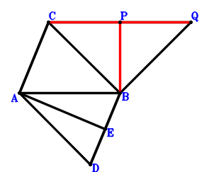
Answer：
\(\because \) CADB is a parallelogram \(\therefore \small\overrightarrow{BD}=\small\overrightarrow{BA} - \small\overrightarrow{BC}\).\(\because \) E is the midpoint of DB \(\therefore \small\overrightarrow{BE}=\dfrac{\small\overrightarrow{BD}}{2}=\dfrac{\small\overrightarrow{BA}}{2} - \dfrac{\small\overrightarrow{BC}}{2}\).\(\because \) PQ=CP \(\therefore - \small\overrightarrow{PC}^{2} + \small\overrightarrow{QP}^{2}=- \left(\small\overrightarrow{BC} - \small\overrightarrow{BP}\right)^{2} + \left(\small\overrightarrow{BP} - \small\overrightarrow{BQ}\right)^{2}=- \small\overrightarrow{BC}^{2} + 2 \small\overrightarrow{BC} \cdot \small\overrightarrow{BP} - 2 \small\overrightarrow{BP} \cdot \small\overrightarrow{BQ} + \small\overrightarrow{BQ}^{2}=0\) . . . . . . \(①\)\(\because \) AB=BQ \(\therefore \small\overrightarrow{BA}^{2} - \small\overrightarrow{BQ}^{2}=0\) . . . . . . \(②\)\(\because \) CA⊥AE \(\therefore \small\overrightarrow{AC} \cdot \small\overrightarrow{EA}=\left(- \small\overrightarrow{BA} + \small\overrightarrow{BC}\right) \cdot \left(\small\overrightarrow{BA} - \small\overrightarrow{BE}\right)=\left(- \small\overrightarrow{BA} + \small\overrightarrow{BC}\right) \cdot \left(\dfrac{\small\overrightarrow{BA}}{2} + \dfrac{\small\overrightarrow{BC}}{2}\right)=- \dfrac{\small\overrightarrow{BA}^{2}}{2} + \dfrac{\small\overrightarrow{BC}^{2}}{2}=0\) . . . . . . \(③\)In conclusion, \(\small\overrightarrow{CQ} \cdot \small\overrightarrow{PB}=- \small\overrightarrow{BP} \cdot \left(- \small\overrightarrow{BC} + \small\overrightarrow{BQ}\right)=\small\overrightarrow{BC} \cdot \small\overrightarrow{BP} - \small\overrightarrow{BP} \cdot \small\overrightarrow{BQ}=1/2\cdot①+1/2\cdot②+③=0\), that is, PB⊥CQ.
Exercise 3099： Let DCEA be a parallelogram. B is the midpoint of DA. CA⊥AE. BA=BQ and QP=PC. Prove that BP⊥QC.
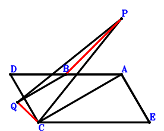
Answer：
\(\because \) B is the midpoint of DA \(\therefore \small\overrightarrow{AD}=2 \small\overrightarrow{AB}\).\(\because \) DCEA is a parallelogram \(\therefore \small\overrightarrow{AE}=\small\overrightarrow{AC} - \small\overrightarrow{AD}=- 2 \small\overrightarrow{AB} + \small\overrightarrow{AC}\).\(\because \) QP=PC \(\therefore - \small\overrightarrow{PC}^{2} + \small\overrightarrow{QP}^{2}=- \left(\small\overrightarrow{AC} - \small\overrightarrow{AP}\right)^{2} + \left(\small\overrightarrow{AP} - \small\overrightarrow{AQ}\right)^{2}=- \small\overrightarrow{AC}^{2} + 2 \small\overrightarrow{AC} \cdot \small\overrightarrow{AP} - 2 \small\overrightarrow{AP} \cdot \small\overrightarrow{AQ} + \small\overrightarrow{AQ}^{2}=0\) . . . . . . \(①\)\(\because \) BA=BQ \(\therefore \small\overrightarrow{AB}^{2} - \small\overrightarrow{QB}^{2}=\small\overrightarrow{AB}^{2} - \left(\small\overrightarrow{AB} - \small\overrightarrow{AQ}\right)^{2}=2 \small\overrightarrow{AB} \cdot \small\overrightarrow{AQ} - \small\overrightarrow{AQ}^{2}=0\) . . . . . . \(②\)\(\because \) CA⊥AE \(\therefore \small\overrightarrow{AC} \cdot \small\overrightarrow{AE}=\small\overrightarrow{AC} \cdot \left(- 2 \small\overrightarrow{AB} + \small\overrightarrow{AC}\right)=- 2 \small\overrightarrow{AB} \cdot \small\overrightarrow{AC} + \small\overrightarrow{AC}^{2}=0\) . . . . . . \(③\)In conclusion, \(\small\overrightarrow{CQ} \cdot \small\overrightarrow{PB}=\left(\small\overrightarrow{AB} - \small\overrightarrow{AP}\right) \cdot \left(- \small\overrightarrow{AC} + \small\overrightarrow{AQ}\right)=- \small\overrightarrow{AB} \cdot \small\overrightarrow{AC} + \small\overrightarrow{AB} \cdot \small\overrightarrow{AQ} + \small\overrightarrow{AC} \cdot \small\overrightarrow{AP} - \small\overrightarrow{AP} \cdot \small\overrightarrow{AQ}=1/2\cdot①+1/2\cdot②+1/2\cdot③=0\), that is, BP⊥QC.
Exercise 3103： Let DABC be a parallelogram. DB⊥AC. AB=CP and QP=QB. Prove that BP⊥CQ.
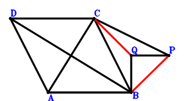
Answer：
\(\because \) DABC is a parallelogram \(\therefore \small\overrightarrow{BD}=\small\overrightarrow{BA} + \small\overrightarrow{BC}\).\(\because \) QP=QB \(\therefore - \small\overrightarrow{QB}^{2} + \small\overrightarrow{QP}^{2}=- \small\overrightarrow{BQ}^{2} + \left(\small\overrightarrow{BP} - \small\overrightarrow{BQ}\right)^{2}=\small\overrightarrow{BP}^{2} - 2 \small\overrightarrow{BP} \cdot \small\overrightarrow{BQ}=0\) . . . . . . \(①\)\(\because \) AB=CP \(\therefore \small\overrightarrow{AB}^{2} - \small\overrightarrow{PC}^{2}=\small\overrightarrow{BA}^{2} - \left(\small\overrightarrow{BC} - \small\overrightarrow{BP}\right)^{2}=\small\overrightarrow{BA}^{2} - \small\overrightarrow{BC}^{2} + 2 \small\overrightarrow{BC} \cdot \small\overrightarrow{BP} - \small\overrightarrow{BP}^{2}=0\) . . . . . . \(②\)\(\because \) DB⊥AC \(\therefore \small\overrightarrow{AC} \cdot \small\overrightarrow{BD}=\small\overrightarrow{BD} \cdot \left(- \small\overrightarrow{BA} + \small\overrightarrow{BC}\right)=\left(- \small\overrightarrow{BA} + \small\overrightarrow{BC}\right) \cdot \left(\small\overrightarrow{BA} + \small\overrightarrow{BC}\right)=- \small\overrightarrow{BA}^{2} + \small\overrightarrow{BC}^{2}=0\) . . . . . . \(③\)In conclusion, \(\small\overrightarrow{CQ} \cdot \small\overrightarrow{PB}=- \small\overrightarrow{BP} \cdot \left(- \small\overrightarrow{BC} + \small\overrightarrow{BQ}\right)=\small\overrightarrow{BC} \cdot \small\overrightarrow{BP} - \small\overrightarrow{BP} \cdot \small\overrightarrow{BQ}=1/2\cdot①+1/2\cdot②+1/2\cdot③=0\), that is, BP⊥CQ.
Exercise 3135： Let EABD be a trapezoid with AB//ED and AB=2ED. D, E are the midpoints of AC, FA, respectively. FB⊥AC. QP=QB and AB=CP. Prove that PB⊥CQ.
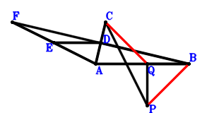
Answer：
\(\because \) D is the midpoint of AC \(\therefore \small\overrightarrow{BD}=\dfrac{\small\overrightarrow{BA}}{2} + \dfrac{\small\overrightarrow{BC}}{2}\).\(\because \) AB//ED and AB=2ED \(\therefore \small\overrightarrow{BE}=\small\overrightarrow{BA} + \dfrac{\small\overrightarrow{BC}}{2}\).\(\because \) E is the midpoint of FA \(\therefore \small\overrightarrow{BF}=- \small\overrightarrow{BA} + 2 \small\overrightarrow{BE}=\small\overrightarrow{BA} + \small\overrightarrow{BC}\).\(\because \) QP=QB \(\therefore - \small\overrightarrow{QB}^{2} + \small\overrightarrow{QP}^{2}=- \small\overrightarrow{BQ}^{2} + \left(\small\overrightarrow{BP} - \small\overrightarrow{BQ}\right)^{2}=\small\overrightarrow{BP}^{2} - 2 \small\overrightarrow{BP} \cdot \small\overrightarrow{BQ}=0\) . . . . . . \(①\)\(\because \) AB=CP \(\therefore \small\overrightarrow{AB}^{2} - \small\overrightarrow{PC}^{2}=\small\overrightarrow{BA}^{2} - \left(\small\overrightarrow{BC} - \small\overrightarrow{BP}\right)^{2}=\small\overrightarrow{BA}^{2} - \small\overrightarrow{BC}^{2} + 2 \small\overrightarrow{BC} \cdot \small\overrightarrow{BP} - \small\overrightarrow{BP}^{2}=0\) . . . . . . \(②\)\(\because \) FB⊥AC \(\therefore \small\overrightarrow{AC} \cdot \small\overrightarrow{BF}=\small\overrightarrow{BF} \cdot \left(- \small\overrightarrow{BA} + \small\overrightarrow{BC}\right)=\left(- \small\overrightarrow{BA} + \small\overrightarrow{BC}\right) \cdot \left(\small\overrightarrow{BA} + \small\overrightarrow{BC}\right)=- \small\overrightarrow{BA}^{2} + \small\overrightarrow{BC}^{2}=0\) . . . . . . \(③\)In conclusion, \(\small\overrightarrow{CQ} \cdot \small\overrightarrow{PB}=- \small\overrightarrow{BP} \cdot \left(- \small\overrightarrow{BC} + \small\overrightarrow{BQ}\right)=\small\overrightarrow{BC} \cdot \small\overrightarrow{BP} - \small\overrightarrow{BP} \cdot \small\overrightarrow{BQ}=1/2\cdot①+1/2\cdot②+1/2\cdot③=0\), that is, PB⊥CQ.
Exercise 3143： Let CEAB be a trapezoid with CB//EA and CB=2EA. D is the midpoint of AB. CA⊥ED. AB=PC and PQ=QB. Prove that PB⊥CQ.
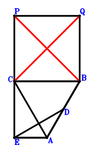
Answer：
\(\because \) D is the midpoint of AB \(\therefore \small\overrightarrow{BD}=\dfrac{\small\overrightarrow{BA}}{2}\).\(\because \) CB//EA and CB=2EA \(\therefore \small\overrightarrow{BE}=\small\overrightarrow{BA} + \dfrac{\small\overrightarrow{BC}}{2}\).\(\because \) PQ=QB \(\therefore - \small\overrightarrow{QB}^{2} + \small\overrightarrow{QP}^{2}=- \small\overrightarrow{BQ}^{2} + \left(\small\overrightarrow{BP} - \small\overrightarrow{BQ}\right)^{2}=\small\overrightarrow{BP}^{2} - 2 \small\overrightarrow{BP} \cdot \small\overrightarrow{BQ}=0\) . . . . . . \(①\)\(\because \) AB=PC \(\therefore \small\overrightarrow{AB}^{2} - \small\overrightarrow{PC}^{2}=\small\overrightarrow{BA}^{2} - \left(\small\overrightarrow{BC} - \small\overrightarrow{BP}\right)^{2}=\small\overrightarrow{BA}^{2} - \small\overrightarrow{BC}^{2} + 2 \small\overrightarrow{BC} \cdot \small\overrightarrow{BP} - \small\overrightarrow{BP}^{2}=0\) . . . . . . \(②\)\(\because \) CA⊥ED \(\therefore \small\overrightarrow{AC} \cdot \small\overrightarrow{DE}=\left(- \small\overrightarrow{BA} + \small\overrightarrow{BC}\right) \cdot \left(- \small\overrightarrow{BD} + \small\overrightarrow{BE}\right)=\left(- \small\overrightarrow{BA} + \small\overrightarrow{BC}\right) \cdot \left(\dfrac{\small\overrightarrow{BA}}{2} + \dfrac{\small\overrightarrow{BC}}{2}\right)=- \dfrac{\small\overrightarrow{BA}^{2}}{2} + \dfrac{\small\overrightarrow{BC}^{2}}{2}=0\) . . . . . . \(③\)In conclusion, \(\small\overrightarrow{CQ} \cdot \small\overrightarrow{PB}=- \small\overrightarrow{BP} \cdot \left(- \small\overrightarrow{BC} + \small\overrightarrow{BQ}\right)=\small\overrightarrow{BC} \cdot \small\overrightarrow{BP} - \small\overrightarrow{BP} \cdot \small\overrightarrow{BQ}=1/2\cdot①+1/2\cdot②+③=0\), that is, PB⊥CQ.
Exercise 3144： Let EDAC be a parallelogram. A is the midpoint of DB. EB⊥AC. QP=QB and AB=CP. Prove that BP⊥CQ.
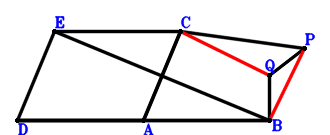
Answer：
\(\because \) A is the midpoint of DB \(\therefore \small\overrightarrow{BD}=2 \small\overrightarrow{BA}\).\(\because \) EDAC is a parallelogram \(\therefore \small\overrightarrow{BE}=\small\overrightarrow{BA} + \small\overrightarrow{BC}\).\(\because \) QP=QB \(\therefore - \small\overrightarrow{QB}^{2} + \small\overrightarrow{QP}^{2}=- \small\overrightarrow{BQ}^{2} + \left(\small\overrightarrow{BP} - \small\overrightarrow{BQ}\right)^{2}=\small\overrightarrow{BP}^{2} - 2 \small\overrightarrow{BP} \cdot \small\overrightarrow{BQ}=0\) . . . . . . \(①\)\(\because \) AB=CP \(\therefore \small\overrightarrow{AB}^{2} - \small\overrightarrow{PC}^{2}=\small\overrightarrow{BA}^{2} - \left(\small\overrightarrow{BC} - \small\overrightarrow{BP}\right)^{2}=\small\overrightarrow{BA}^{2} - \small\overrightarrow{BC}^{2} + 2 \small\overrightarrow{BC} \cdot \small\overrightarrow{BP} - \small\overrightarrow{BP}^{2}=0\) . . . . . . \(②\)\(\because \) EB⊥AC \(\therefore \small\overrightarrow{AC} \cdot \small\overrightarrow{BE}=\small\overrightarrow{BE} \cdot \left(- \small\overrightarrow{BA} + \small\overrightarrow{BC}\right)=\left(- \small\overrightarrow{BA} + \small\overrightarrow{BC}\right) \cdot \left(\small\overrightarrow{BA} + \small\overrightarrow{BC}\right)=- \small\overrightarrow{BA}^{2} + \small\overrightarrow{BC}^{2}=0\) . . . . . . \(③\)In conclusion, \(\small\overrightarrow{CQ} \cdot \small\overrightarrow{PB}=- \small\overrightarrow{BP} \cdot \left(- \small\overrightarrow{BC} + \small\overrightarrow{BQ}\right)=\small\overrightarrow{BC} \cdot \small\overrightarrow{BP} - \small\overrightarrow{BP} \cdot \small\overrightarrow{BQ}=1/2\cdot①+1/2\cdot②+1/2\cdot③=0\), that is, BP⊥CQ.
Exercise 3146： Let B be the midpoint of CD. CA⊥AD. PQ=QB and AB=CP. Prove that PB⊥CQ.
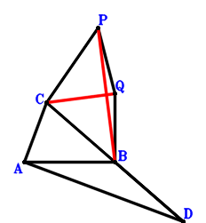
Answer：
\(\because \) B is the midpoint of CD \(\therefore \small\overrightarrow{BD}=- \small\overrightarrow{BC}\).\(\because \) PQ=QB \(\therefore - \small\overrightarrow{QB}^{2} + \small\overrightarrow{QP}^{2}=- \small\overrightarrow{BQ}^{2} + \left(\small\overrightarrow{BP} - \small\overrightarrow{BQ}\right)^{2}=\small\overrightarrow{BP}^{2} - 2 \small\overrightarrow{BP} \cdot \small\overrightarrow{BQ}=0\) . . . . . . \(①\)\(\because \) AB=CP \(\therefore \small\overrightarrow{AB}^{2} - \small\overrightarrow{PC}^{2}=\small\overrightarrow{BA}^{2} - \left(\small\overrightarrow{BC} - \small\overrightarrow{BP}\right)^{2}=\small\overrightarrow{BA}^{2} - \small\overrightarrow{BC}^{2} + 2 \small\overrightarrow{BC} \cdot \small\overrightarrow{BP} - \small\overrightarrow{BP}^{2}=0\) . . . . . . \(②\)\(\because \) CA⊥AD \(\therefore \small\overrightarrow{AC} \cdot \small\overrightarrow{DA}=\left(- \small\overrightarrow{BA} + \small\overrightarrow{BC}\right) \cdot \left(\small\overrightarrow{BA} - \small\overrightarrow{BD}\right)=\left(- \small\overrightarrow{BA} + \small\overrightarrow{BC}\right) \cdot \left(\small\overrightarrow{BA} + \small\overrightarrow{BC}\right)=- \small\overrightarrow{BA}^{2} + \small\overrightarrow{BC}^{2}=0\) . . . . . . \(③\)In conclusion, \(\small\overrightarrow{CQ} \cdot \small\overrightarrow{PB}=- \small\overrightarrow{BP} \cdot \left(- \small\overrightarrow{BC} + \small\overrightarrow{BQ}\right)=\small\overrightarrow{BC} \cdot \small\overrightarrow{BP} - \small\overrightarrow{BP} \cdot \small\overrightarrow{BQ}=1/2\cdot①+1/2\cdot②+1/2\cdot③=0\), that is, PB⊥CQ.
Exercise 3152： Let CBAD be a parallelogram. E is the midpoint of DA and BF. CA⊥AF. BA=PC and QP=QB. Prove that PB⊥QC.
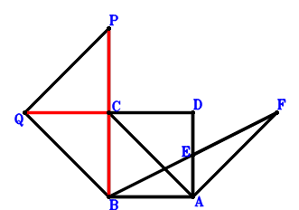
Answer：
\(\because \) CBAD is a parallelogram \(\therefore \small\overrightarrow{BD}=\small\overrightarrow{BA} + \small\overrightarrow{BC}\).\(\because \) E is the midpoint of DA \(\therefore \small\overrightarrow{BE}=\dfrac{\small\overrightarrow{BA}}{2} + \dfrac{\small\overrightarrow{BD}}{2}=\small\overrightarrow{BA} + \dfrac{\small\overrightarrow{BC}}{2}\).\(\because \) E is the midpoint of BF \(\therefore \small\overrightarrow{BF}=2 \small\overrightarrow{BE}=2 \small\overrightarrow{BA} + \small\overrightarrow{BC}\).\(\because \) QP=QB \(\therefore - \small\overrightarrow{QB}^{2} + \small\overrightarrow{QP}^{2}=- \small\overrightarrow{BQ}^{2} + \left(\small\overrightarrow{BP} - \small\overrightarrow{BQ}\right)^{2}=\small\overrightarrow{BP}^{2} - 2 \small\overrightarrow{BP} \cdot \small\overrightarrow{BQ}=0\) . . . . . . \(①\)\(\because \) BA=PC \(\therefore \small\overrightarrow{AB}^{2} - \small\overrightarrow{PC}^{2}=\small\overrightarrow{BA}^{2} - \left(\small\overrightarrow{BC} - \small\overrightarrow{BP}\right)^{2}=\small\overrightarrow{BA}^{2} - \small\overrightarrow{BC}^{2} + 2 \small\overrightarrow{BC} \cdot \small\overrightarrow{BP} - \small\overrightarrow{BP}^{2}=0\) . . . . . . \(②\)\(\because \) CA⊥AF \(\therefore \small\overrightarrow{AC} \cdot \small\overrightarrow{AF}=\left(- \small\overrightarrow{BA} + \small\overrightarrow{BC}\right) \cdot \left(- \small\overrightarrow{BA} + \small\overrightarrow{BF}\right)=\left(- \small\overrightarrow{BA} + \small\overrightarrow{BC}\right) \cdot \left(\small\overrightarrow{BA} + \small\overrightarrow{BC}\right)=- \small\overrightarrow{BA}^{2} + \small\overrightarrow{BC}^{2}=0\) . . . . . . \(③\)In conclusion, \(\small\overrightarrow{CQ} \cdot \small\overrightarrow{PB}=- \small\overrightarrow{BP} \cdot \left(- \small\overrightarrow{BC} + \small\overrightarrow{BQ}\right)=\small\overrightarrow{BC} \cdot \small\overrightarrow{BP} - \small\overrightarrow{BP} \cdot \small\overrightarrow{BQ}=1/2\cdot①+1/2\cdot②+1/2\cdot③=0\), that is, PB⊥QC.
Exercise 3186： Let DCBE be a trapezoid with CB//DE and CB=2DE. D is the midpoint of BA. CA⊥AE. BA=PC and PQ=QB. Prove that PB⊥CQ.
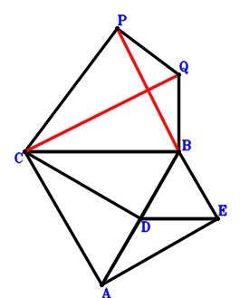
Answer：
\(\because \) D is the midpoint of BA \(\therefore \small\overrightarrow{BD}=\dfrac{\small\overrightarrow{BA}}{2}\).\(\because \) CB//DE and CB=2DE \(\therefore \small\overrightarrow{BE}=\dfrac{\small\overrightarrow{BA}}{2} - \dfrac{\small\overrightarrow{BC}}{2}\).\(\because \) PQ=QB \(\therefore - \small\overrightarrow{QB}^{2} + \small\overrightarrow{QP}^{2}=- \small\overrightarrow{BQ}^{2} + \left(\small\overrightarrow{BP} - \small\overrightarrow{BQ}\right)^{2}=\small\overrightarrow{BP}^{2} - 2 \small\overrightarrow{BP} \cdot \small\overrightarrow{BQ}=0\) . . . . . . \(①\)\(\because \) BA=PC \(\therefore \small\overrightarrow{AB}^{2} - \small\overrightarrow{PC}^{2}=\small\overrightarrow{BA}^{2} - \left(\small\overrightarrow{BC} - \small\overrightarrow{BP}\right)^{2}=\small\overrightarrow{BA}^{2} - \small\overrightarrow{BC}^{2} + 2 \small\overrightarrow{BC} \cdot \small\overrightarrow{BP} - \small\overrightarrow{BP}^{2}=0\) . . . . . . \(②\)\(\because \) CA⊥AE \(\therefore \small\overrightarrow{AC} \cdot \small\overrightarrow{EA}=\left(- \small\overrightarrow{BA} + \small\overrightarrow{BC}\right) \cdot \left(\small\overrightarrow{BA} - \small\overrightarrow{BE}\right)=\left(- \small\overrightarrow{BA} + \small\overrightarrow{BC}\right) \cdot \left(\dfrac{\small\overrightarrow{BA}}{2} + \dfrac{\small\overrightarrow{BC}}{2}\right)=- \dfrac{\small\overrightarrow{BA}^{2}}{2} + \dfrac{\small\overrightarrow{BC}^{2}}{2}=0\) . . . . . . \(③\)In conclusion, \(\small\overrightarrow{CQ} \cdot \small\overrightarrow{PB}=- \small\overrightarrow{BP} \cdot \left(- \small\overrightarrow{BC} + \small\overrightarrow{BQ}\right)=\small\overrightarrow{BC} \cdot \small\overrightarrow{BP} - \small\overrightarrow{BP} \cdot \small\overrightarrow{BQ}=1/2\cdot①+1/2\cdot②+③=0\), that is, PB⊥CQ.
Exercise 3190： Let CBAD and DBAE be parallelograms. CA⊥AE. BA=PC and PQ=QB. Prove that PB⊥QC.
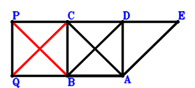
Answer：
\(\because \) CBAD is a parallelogram \(\therefore \small\overrightarrow{BD}=\small\overrightarrow{BA} + \small\overrightarrow{BC}\).\(\because \) DBAE is a parallelogram \(\therefore \small\overrightarrow{BE}=2 \small\overrightarrow{BA} + \small\overrightarrow{BC}\).\(\because \) PQ=QB \(\therefore - \small\overrightarrow{QB}^{2} + \small\overrightarrow{QP}^{2}=- \small\overrightarrow{BQ}^{2} + \left(\small\overrightarrow{BP} - \small\overrightarrow{BQ}\right)^{2}=\small\overrightarrow{BP}^{2} - 2 \small\overrightarrow{BP} \cdot \small\overrightarrow{BQ}=0\) . . . . . . \(①\)\(\because \) BA=PC \(\therefore \small\overrightarrow{AB}^{2} - \small\overrightarrow{PC}^{2}=\small\overrightarrow{BA}^{2} - \left(\small\overrightarrow{BC} - \small\overrightarrow{BP}\right)^{2}=\small\overrightarrow{BA}^{2} - \small\overrightarrow{BC}^{2} + 2 \small\overrightarrow{BC} \cdot \small\overrightarrow{BP} - \small\overrightarrow{BP}^{2}=0\) . . . . . . \(②\)\(\because \) CA⊥AE \(\therefore \small\overrightarrow{AC} \cdot \small\overrightarrow{AE}=\left(- \small\overrightarrow{BA} + \small\overrightarrow{BC}\right) \cdot \left(- \small\overrightarrow{BA} + \small\overrightarrow{BE}\right)=\left(- \small\overrightarrow{BA} + \small\overrightarrow{BC}\right) \cdot \left(\small\overrightarrow{BA} + \small\overrightarrow{BC}\right)=- \small\overrightarrow{BA}^{2} + \small\overrightarrow{BC}^{2}=0\) . . . . . . \(③\)In conclusion, \(\small\overrightarrow{CQ} \cdot \small\overrightarrow{PB}=- \small\overrightarrow{BP} \cdot \left(- \small\overrightarrow{BC} + \small\overrightarrow{BQ}\right)=\small\overrightarrow{BC} \cdot \small\overrightarrow{BP} - \small\overrightarrow{BP} \cdot \small\overrightarrow{BQ}=1/2\cdot①+1/2\cdot②+1/2\cdot③=0\), that is, PB⊥QC.
Exercise 3220： Let F, E, C be collinear and FC=3FE. A, E, B are collinear and EB=2AE. D is the midpoint of AC. AB⊥FD. AC=QB and QP=PC. Prove that BP⊥QC.
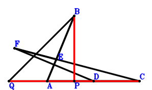
Answer：
\(\because \) D is the midpoint of AC \(\therefore \small\overrightarrow{CD}=\dfrac{\small\overrightarrow{CA}}{2}\).\(\because \) A, E, B are collinear and EB=2AE \(\therefore \small\overrightarrow{CE}=\dfrac{2 \small\overrightarrow{CA}}{3} + \dfrac{\small\overrightarrow{CB}}{3}\).\(\because \) F, E, C are collinear and FC=3FE \(\therefore \small\overrightarrow{CF}=\dfrac{3 \small\overrightarrow{CE}}{2}=\small\overrightarrow{CA} + \dfrac{\small\overrightarrow{CB}}{2}\).\(\because \) QP=PC \(\therefore - \small\overrightarrow{PC}^{2} + \small\overrightarrow{QP}^{2}=- \small\overrightarrow{CP}^{2} + \left(\small\overrightarrow{CP} - \small\overrightarrow{CQ}\right)^{2}=- 2 \small\overrightarrow{CP} \cdot \small\overrightarrow{CQ} + \small\overrightarrow{CQ}^{2}=0\) . . . . . . \(①\)\(\because \) AC=QB \(\therefore \small\overrightarrow{AC}^{2} - \small\overrightarrow{QB}^{2}=\small\overrightarrow{CA}^{2} - \left(\small\overrightarrow{CB} - \small\overrightarrow{CQ}\right)^{2}=\small\overrightarrow{CA}^{2} - \small\overrightarrow{CB}^{2} + 2 \small\overrightarrow{CB} \cdot \small\overrightarrow{CQ} - \small\overrightarrow{CQ}^{2}=0\) . . . . . . \(②\)\(\because \) AB⊥FD \(\therefore \small\overrightarrow{AB} \cdot \small\overrightarrow{DF}=\left(- \small\overrightarrow{CA} + \small\overrightarrow{CB}\right) \cdot \left(- \small\overrightarrow{CD} + \small\overrightarrow{CF}\right)=\left(- \small\overrightarrow{CA} + \small\overrightarrow{CB}\right) \cdot \left(\dfrac{\small\overrightarrow{CA}}{2} + \dfrac{\small\overrightarrow{CB}}{2}\right)=- \dfrac{\small\overrightarrow{CA}^{2}}{2} + \dfrac{\small\overrightarrow{CB}^{2}}{2}=0\) . . . . . . \(③\)In conclusion, \(\small\overrightarrow{CQ} \cdot \small\overrightarrow{PB}=\small\overrightarrow{CQ} \cdot \left(\small\overrightarrow{CB} - \small\overrightarrow{CP}\right)=\small\overrightarrow{CB} \cdot \small\overrightarrow{CQ} - \small\overrightarrow{CP} \cdot \small\overrightarrow{CQ}=1/2\cdot①+1/2\cdot②+③=0\), that is, BP⊥QC.
Exercise 3225： Let BADC be a parallelogram. A is the midpoint of EC. ED⊥AB. PQ=PC and AC=BQ. Prove that BP⊥CQ.
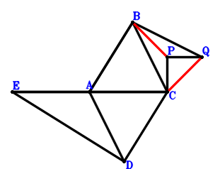
Answer：
\(\because \) BADC is a parallelogram \(\therefore \small\overrightarrow{CD}=\small\overrightarrow{CA} - \small\overrightarrow{CB}\).\(\because \) A is the midpoint of EC \(\therefore \small\overrightarrow{CE}=2 \small\overrightarrow{CA}\).\(\because \) PQ=PC \(\therefore - \small\overrightarrow{PC}^{2} + \small\overrightarrow{QP}^{2}=- \small\overrightarrow{CP}^{2} + \left(\small\overrightarrow{CP} - \small\overrightarrow{CQ}\right)^{2}=- 2 \small\overrightarrow{CP} \cdot \small\overrightarrow{CQ} + \small\overrightarrow{CQ}^{2}=0\) . . . . . . \(①\)\(\because \) AC=BQ \(\therefore \small\overrightarrow{AC}^{2} - \small\overrightarrow{QB}^{2}=\small\overrightarrow{CA}^{2} - \left(\small\overrightarrow{CB} - \small\overrightarrow{CQ}\right)^{2}=\small\overrightarrow{CA}^{2} - \small\overrightarrow{CB}^{2} + 2 \small\overrightarrow{CB} \cdot \small\overrightarrow{CQ} - \small\overrightarrow{CQ}^{2}=0\) . . . . . . \(②\)\(\because \) ED⊥AB \(\therefore \small\overrightarrow{AB} \cdot \small\overrightarrow{DE}=\left(- \small\overrightarrow{CA} + \small\overrightarrow{CB}\right) \cdot \left(- \small\overrightarrow{CD} + \small\overrightarrow{CE}\right)=\left(- \small\overrightarrow{CA} + \small\overrightarrow{CB}\right) \cdot \left(\small\overrightarrow{CA} + \small\overrightarrow{CB}\right)=- \small\overrightarrow{CA}^{2} + \small\overrightarrow{CB}^{2}=0\) . . . . . . \(③\)In conclusion, \(\small\overrightarrow{CQ} \cdot \small\overrightarrow{PB}=\small\overrightarrow{CQ} \cdot \left(\small\overrightarrow{CB} - \small\overrightarrow{CP}\right)=\small\overrightarrow{CB} \cdot \small\overrightarrow{CQ} - \small\overrightarrow{CP} \cdot \small\overrightarrow{CQ}=1/2\cdot①+1/2\cdot②+1/2\cdot③=0\), that is, BP⊥CQ.
Exercise 3238： Let DBCA be a trapezoid with BC//DA and BC=2DA. D is the midpoint of CE. BA⊥AE. CA=QB and QP=PC. Prove that BP⊥QC.
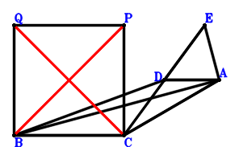
Answer：
\(\because \) BC//DA and BC=2DA \(\therefore \small\overrightarrow{CD}=\small\overrightarrow{CA} + \dfrac{\small\overrightarrow{CB}}{2}\).\(\because \) D is the midpoint of CE \(\therefore \small\overrightarrow{CE}=2 \small\overrightarrow{CD}=2 \small\overrightarrow{CA} + \small\overrightarrow{CB}\).\(\because \) QP=PC \(\therefore - \small\overrightarrow{PC}^{2} + \small\overrightarrow{QP}^{2}=- \small\overrightarrow{CP}^{2} + \left(\small\overrightarrow{CP} - \small\overrightarrow{CQ}\right)^{2}=- 2 \small\overrightarrow{CP} \cdot \small\overrightarrow{CQ} + \small\overrightarrow{CQ}^{2}=0\) . . . . . . \(①\)\(\because \) CA=QB \(\therefore \small\overrightarrow{AC}^{2} - \small\overrightarrow{QB}^{2}=\small\overrightarrow{CA}^{2} - \left(\small\overrightarrow{CB} - \small\overrightarrow{CQ}\right)^{2}=\small\overrightarrow{CA}^{2} - \small\overrightarrow{CB}^{2} + 2 \small\overrightarrow{CB} \cdot \small\overrightarrow{CQ} - \small\overrightarrow{CQ}^{2}=0\) . . . . . . \(②\)\(\because \) BA⊥AE \(\therefore \small\overrightarrow{AB} \cdot \small\overrightarrow{AE}=\left(- \small\overrightarrow{CA} + \small\overrightarrow{CB}\right) \cdot \left(- \small\overrightarrow{CA} + \small\overrightarrow{CE}\right)=\left(- \small\overrightarrow{CA} + \small\overrightarrow{CB}\right) \cdot \left(\small\overrightarrow{CA} + \small\overrightarrow{CB}\right)=- \small\overrightarrow{CA}^{2} + \small\overrightarrow{CB}^{2}=0\) . . . . . . \(③\)In conclusion, \(\small\overrightarrow{CQ} \cdot \small\overrightarrow{PB}=\small\overrightarrow{CQ} \cdot \left(\small\overrightarrow{CB} - \small\overrightarrow{CP}\right)=\small\overrightarrow{CB} \cdot \small\overrightarrow{CQ} - \small\overrightarrow{CP} \cdot \small\overrightarrow{CQ}=1/2\cdot①+1/2\cdot②+1/2\cdot③=0\), that is, BP⊥QC.
Exercise 3279： Let FACE be a parallelogram. D is the midpoint of AB and EC. FA⊥AB. PQ=PC and AC=BQ. Prove that BP⊥CQ.
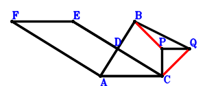
Answer：
\(\because \) D is the midpoint of AB \(\therefore \small\overrightarrow{CD}=\dfrac{\small\overrightarrow{CA}}{2} + \dfrac{\small\overrightarrow{CB}}{2}\).\(\because \) D is the midpoint of EC \(\therefore \small\overrightarrow{CE}=2 \small\overrightarrow{CD}=\small\overrightarrow{CA} + \small\overrightarrow{CB}\).\(\because \) FACE is a parallelogram \(\therefore \small\overrightarrow{CF}=2 \small\overrightarrow{CA} + \small\overrightarrow{CB}\).\(\because \) PQ=PC \(\therefore - \small\overrightarrow{PC}^{2} + \small\overrightarrow{QP}^{2}=- \small\overrightarrow{CP}^{2} + \left(\small\overrightarrow{CP} - \small\overrightarrow{CQ}\right)^{2}=- 2 \small\overrightarrow{CP} \cdot \small\overrightarrow{CQ} + \small\overrightarrow{CQ}^{2}=0\) . . . . . . \(①\)\(\because \) AC=BQ \(\therefore \small\overrightarrow{AC}^{2} - \small\overrightarrow{QB}^{2}=\small\overrightarrow{CA}^{2} - \left(\small\overrightarrow{CB} - \small\overrightarrow{CQ}\right)^{2}=\small\overrightarrow{CA}^{2} - \small\overrightarrow{CB}^{2} + 2 \small\overrightarrow{CB} \cdot \small\overrightarrow{CQ} - \small\overrightarrow{CQ}^{2}=0\) . . . . . . \(②\)\(\because \) FA⊥AB \(\therefore \small\overrightarrow{AB} \cdot \small\overrightarrow{AF}=\left(- \small\overrightarrow{CA} + \small\overrightarrow{CB}\right) \cdot \left(- \small\overrightarrow{CA} + \small\overrightarrow{CF}\right)=\left(- \small\overrightarrow{CA} + \small\overrightarrow{CB}\right) \cdot \left(\small\overrightarrow{CA} + \small\overrightarrow{CB}\right)=- \small\overrightarrow{CA}^{2} + \small\overrightarrow{CB}^{2}=0\) . . . . . . \(③\)In conclusion, \(\small\overrightarrow{CQ} \cdot \small\overrightarrow{PB}=\small\overrightarrow{CQ} \cdot \left(\small\overrightarrow{CB} - \small\overrightarrow{CP}\right)=\small\overrightarrow{CB} \cdot \small\overrightarrow{CQ} - \small\overrightarrow{CP} \cdot \small\overrightarrow{CQ}=1/2\cdot①+1/2\cdot②+1/2\cdot③=0\), that is, BP⊥CQ.
Exercise 3353： Let ACBE be a parallelogram. D is the midpoint of FE and CA. FA⊥AB. PQ=QB and CA=PC. Prove that PB⊥CQ.
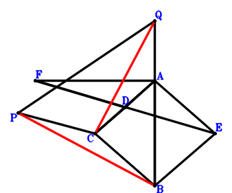
Answer：
\(\because \) D is the midpoint of CA \(\therefore \small\overrightarrow{AD}=\dfrac{\small\overrightarrow{AC}}{2}\).\(\because \) ACBE is a parallelogram \(\therefore \small\overrightarrow{AE}=\small\overrightarrow{AB} - \small\overrightarrow{AC}\).\(\because \) D is the midpoint of FE \(\therefore \small\overrightarrow{AF}=\small\overrightarrow{AC} - \small\overrightarrow{AE}=- \small\overrightarrow{AB} + 2 \small\overrightarrow{AC}\).\(\because \) PQ=QB \(\therefore - \small\overrightarrow{QB}^{2} + \small\overrightarrow{QP}^{2}=- \left(\small\overrightarrow{AB} - \small\overrightarrow{AQ}\right)^{2} + \left(\small\overrightarrow{AP} - \small\overrightarrow{AQ}\right)^{2}=- \small\overrightarrow{AB}^{2} + 2 \small\overrightarrow{AB} \cdot \small\overrightarrow{AQ} + \small\overrightarrow{AP}^{2} - 2 \small\overrightarrow{AP} \cdot \small\overrightarrow{AQ}=0\) . . . . . . \(①\)\(\because \) CA=PC \(\therefore \small\overrightarrow{AC}^{2} - \small\overrightarrow{PC}^{2}=\small\overrightarrow{AC}^{2} - \left(\small\overrightarrow{AC} - \small\overrightarrow{AP}\right)^{2}=2 \small\overrightarrow{AC} \cdot \small\overrightarrow{AP} - \small\overrightarrow{AP}^{2}=0\) . . . . . . \(②\)\(\because \) FA⊥AB \(\therefore - \small\overrightarrow{AB} \cdot \small\overrightarrow{AF}=- \small\overrightarrow{AB} \cdot \left(- \small\overrightarrow{AB} + 2 \small\overrightarrow{AC}\right)=\small\overrightarrow{AB}^{2} - 2 \small\overrightarrow{AB} \cdot \small\overrightarrow{AC}=0\) . . . . . . \(③\)In conclusion, \(\small\overrightarrow{CQ} \cdot \small\overrightarrow{PB}=\left(\small\overrightarrow{AB} - \small\overrightarrow{AP}\right) \cdot \left(- \small\overrightarrow{AC} + \small\overrightarrow{AQ}\right)=- \small\overrightarrow{AB} \cdot \small\overrightarrow{AC} + \small\overrightarrow{AB} \cdot \small\overrightarrow{AQ} + \small\overrightarrow{AC} \cdot \small\overrightarrow{AP} - \small\overrightarrow{AP} \cdot \small\overrightarrow{AQ}=1/2\cdot①+1/2\cdot②+1/2\cdot③=0\), that is, PB⊥CQ.
Exercise 3355： Let ACBD be a trapezoid with BD//CA and BD=2CA. BA⊥AD. PQ=QB and CA=PC. Prove that PB⊥CQ.
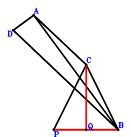
Answer：
\(\because \) BD//CA and BD=2CA \(\therefore \small\overrightarrow{BD}=2 \small\overrightarrow{BA} - 2 \small\overrightarrow{BC}\).\(\because \) PQ=QB \(\therefore - \small\overrightarrow{QB}^{2} + \small\overrightarrow{QP}^{2}=- \small\overrightarrow{BQ}^{2} + \left(\small\overrightarrow{BP} - \small\overrightarrow{BQ}\right)^{2}=\small\overrightarrow{BP}^{2} - 2 \small\overrightarrow{BP} \cdot \small\overrightarrow{BQ}=0\) . . . . . . \(①\)\(\because \) CA=PC \(\therefore \small\overrightarrow{AC}^{2} - \small\overrightarrow{PC}^{2}=\left(- \small\overrightarrow{BA} + \small\overrightarrow{BC}\right)^{2} - \left(\small\overrightarrow{BC} - \small\overrightarrow{BP}\right)^{2}=\small\overrightarrow{BA}^{2} - 2 \small\overrightarrow{BA} \cdot \small\overrightarrow{BC} + 2 \small\overrightarrow{BC} \cdot \small\overrightarrow{BP} - \small\overrightarrow{BP}^{2}=0\) . . . . . . \(②\)\(\because \) BA⊥AD \(\therefore \small\overrightarrow{AB} \cdot \small\overrightarrow{AD}=- \small\overrightarrow{BA} \cdot \left(- \small\overrightarrow{BA} + \small\overrightarrow{BD}\right)=- \small\overrightarrow{BA} \cdot \left(\small\overrightarrow{BA} - 2 \small\overrightarrow{BC}\right)=- \small\overrightarrow{BA}^{2} + 2 \small\overrightarrow{BA} \cdot \small\overrightarrow{BC}=0\) . . . . . . \(③\)In conclusion, \(\small\overrightarrow{CQ} \cdot \small\overrightarrow{PB}=- \small\overrightarrow{BP} \cdot \left(- \small\overrightarrow{BC} + \small\overrightarrow{BQ}\right)=\small\overrightarrow{BC} \cdot \small\overrightarrow{BP} - \small\overrightarrow{BP} \cdot \small\overrightarrow{BQ}=1/2\cdot①+1/2\cdot②+1/2\cdot③=0\), that is, PB⊥CQ.
Exercise 3357： Let C, D, A be collinear and DA=2CD. E, D, B are collinear and EB=3ED. EA⊥AB. CA=PC and PQ=QB. Prove that PB⊥CQ.
Answer：
\(\because \) C, D, A are collinear and DA=2CD \(\therefore \small\overrightarrow{BD}=\dfrac{\small\overrightarrow{BA}}{3} + \dfrac{2 \small\overrightarrow{BC}}{3}\).\(\because \) E, D, B are collinear and EB=3ED \(\therefore \small\overrightarrow{BE}=\dfrac{3 \small\overrightarrow{BD}}{2}=\dfrac{\small\overrightarrow{BA}}{2} + \small\overrightarrow{BC}\).\(\because \) PQ=QB \(\therefore - \small\overrightarrow{QB}^{2} + \small\overrightarrow{QP}^{2}=- \small\overrightarrow{BQ}^{2} + \left(\small\overrightarrow{BP} - \small\overrightarrow{BQ}\right)^{2}=\small\overrightarrow{BP}^{2} - 2 \small\overrightarrow{BP} \cdot \small\overrightarrow{BQ}=0\) . . . . . . \(①\)\(\because \) CA=PC \(\therefore \small\overrightarrow{AC}^{2} - \small\overrightarrow{PC}^{2}=\left(- \small\overrightarrow{BA} + \small\overrightarrow{BC}\right)^{2} - \left(\small\overrightarrow{BC} - \small\overrightarrow{BP}\right)^{2}=\small\overrightarrow{BA}^{2} - 2 \small\overrightarrow{BA} \cdot \small\overrightarrow{BC} + 2 \small\overrightarrow{BC} \cdot \small\overrightarrow{BP} - \small\overrightarrow{BP}^{2}=0\) . . . . . . \(②\)\(\because \) EA⊥AB \(\therefore \small\overrightarrow{AB} \cdot \small\overrightarrow{EA}=- \small\overrightarrow{BA} \cdot \left(\small\overrightarrow{BA} - \small\overrightarrow{BE}\right)=- \small\overrightarrow{BA} \cdot \left(\dfrac{\small\overrightarrow{BA}}{2} - \small\overrightarrow{BC}\right)=- \dfrac{\small\overrightarrow{BA}^{2}}{2} + \small\overrightarrow{BA} \cdot \small\overrightarrow{BC}=0\) . . . . . . \(③\)In conclusion, \(\small\overrightarrow{CQ} \cdot \small\overrightarrow{PB}=- \small\overrightarrow{BP} \cdot \left(- \small\overrightarrow{BC} + \small\overrightarrow{BQ}\right)=\small\overrightarrow{BC} \cdot \small\overrightarrow{BP} - \small\overrightarrow{BP} \cdot \small\overrightarrow{BQ}=1/2\cdot①+1/2\cdot②+③=0\), that is, PB⊥CQ.
Exercise 3372： Let CA⊥AB. PQ=QB and AC=CP. Given that PB//CQ, prove that \(AB^{2}=2 CQ \cdot PB\).
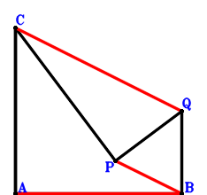
Answer：
\(\because \) PQ=QB \(\therefore - \small\overrightarrow{QB}^{2} + \small\overrightarrow{QP}^{2}=- \small\overrightarrow{BQ}^{2} + \left(\small\overrightarrow{BP} - \small\overrightarrow{BQ}\right)^{2}=\small\overrightarrow{BP}^{2} - 2 \small\overrightarrow{BP} \cdot \small\overrightarrow{BQ}=0\) . . . . . . \(①\)\(\because \) AC=CP \(\therefore \small\overrightarrow{AC}^{2} - \small\overrightarrow{PC}^{2}=\left(- \small\overrightarrow{BA} + \small\overrightarrow{BC}\right)^{2} - \left(\small\overrightarrow{BC} - \small\overrightarrow{BP}\right)^{2}=\small\overrightarrow{BA}^{2} - 2 \small\overrightarrow{BA} \cdot \small\overrightarrow{BC} + 2 \small\overrightarrow{BC} \cdot \small\overrightarrow{BP} - \small\overrightarrow{BP}^{2}=0\) . . . . . . \(②\)\(\because \) CA⊥AB \(\therefore \small\overrightarrow{AB} \cdot \small\overrightarrow{AC}=- \small\overrightarrow{BA} \cdot \left(- \small\overrightarrow{BA} + \small\overrightarrow{BC}\right)=\small\overrightarrow{BA}^{2} - \small\overrightarrow{BA} \cdot \small\overrightarrow{BC}=0\) . . . . . . \(③\)In conclusion, \(\small\overrightarrow{AB}^{2} - 2 \small\overrightarrow{CQ} \cdot \small\overrightarrow{PB}=\small\overrightarrow{BA}^{2} + 2 \small\overrightarrow{BP} \cdot \left(- \small\overrightarrow{BC} + \small\overrightarrow{BQ}\right)=\small\overrightarrow{BA}^{2} - 2 \small\overrightarrow{BC} \cdot \small\overrightarrow{BP} + 2 \small\overrightarrow{BP} \cdot \small\overrightarrow{BQ}=-①-②+2\cdot③=0\)\(\because\) PB//CQ \(\therefore\) \(AB^{2}=2 CQ \cdot PB\).